Do current AI alignment approaches scale with capability? AI capability compounds through recursive self-correction: sequential chain-of-thought reasoning produces super-linear gains confirmed in 95.6% of tested configurations (Sharma & Chopra, 2025). But alignment constraints, including RLHF (Reinforcement Learning from Human Feedback), constitutional rules, output filters, and monitoring, operate externally to the reasoning process. If external constraints do not participate in the recursive loop, they cannot compound. We formalise this as the alignment scaling exponent $\alpha_{\text{align}}$ and predict $\alpha_{\text{align}} \approx 0$ for external approaches versus $\alpha_{\text{align}} \approx \alpha_{\text{cap}}$ for architecturally embedded values. If this prediction holds, the safety ratio $S \propto R^{(\alpha_{\text{align}} - \alpha_{\text{cap}})}$ degrades to zero as recursive depth increases, regardless of initial safety margins.
The underlying scaling framework (the ARC Principle: $U = I \times R^{\alpha}$, where $\alpha = 1/(1-\beta)$) is derived from first principles and validated computationally to $R^2 = 1.00000000$. We derive a universal ceiling for classical sequential computation (the ARC Bound, $U_{\max} = I \times R^2$, an information-theoretic upper bound analogous to the Shannon Limit) and identify the same structural pattern, recursive self-correction producing super-linear gains, across four independent domains: AI reasoning (power-law), quantum error correction (exponential), classical time crystals (saturating), and biological allometry (power-law throttled by thermodynamic drag). The cross-domain evidence demonstrates that recursive scaling is structural, not a software-specific phenomenon addressable through implementation changes. Thirteen falsification criteria are specified, each sufficient to refute the framework independently. This prediction has not been tested. We provide the measurement protocol.
Keywords: AI alignment, alignment scaling, test-time compute, recursive amplification, scaling laws, error suppression, chain-of-thought reasoning, time crystals, cross-domain validation, information-theoretic bound, embedded alignment, thermodynamic drag
Science advances through rigorous critique and self-correction. Following extensive mathematical review, this version contains necessary structural corrections to the ARC framework.
1. Axiom Resolution: Previous versions contained an algebraic inconsistency: the Cumulative Advantage ODE was applied to absolute capability ($U$) rather than the amplification factor ($g$). Because $U = I \times g(R)$, applying $dU/dR = a \cdot U^\beta$ introduces an $I^{\beta-1}$ dependence that contradicts the separation of $I$ and $R$. The corrected formulation, $dg/dR = a \cdot g^\beta$, resolves this contradiction while preserving the multiplicative interaction $U = I \times g(R)$ and all qualitative predictions. The corrected integrated form is $U(R) = I \times [1 + \frac{a}{\alpha}R]^\alpha$.
2. Physical Saturation: Previous versions mapped saturating physical systems (time crystals, biological networks) onto unbounded power laws. This was a category error. The framework now applies a logistic saturating equation, $dg/dR = a \cdot g^\beta(1 - g/g_{\max})$, to physical substrates subject to energy dissipation, correctly modelling the limit-cycle behaviour observed experimentally.
3. Thermodynamic Drag: We introduce the concept of substrate-dependent friction to explain why biological metabolic scaling (Kleiber's Law, $M^{0.75}$) falls below the theoretical maximum. Biology is constrained by thermodynamic drag: the physical costs of pumping fluids, dissipating heat, and distributing resources through three-dimensional fractal networks. Digital AI operates with orders-of-magnitude less substrate friction, enabling it to approach the theoretical quadratic bound far more closely than any prior recursive system. This reframing transforms the biological evidence from a problematic numerical claim into the framework's strongest safety argument.
4. Quadratic Limit: The $\alpha \leq 2$ bound is now grounded in the $O(N^2)$ scaling of transformer self-attention mechanisms, providing a concrete computational basis for the quadratic ceiling in current AI architectures. The previous derivation from elasticity analysis and edge-of-chaos arguments has been withdrawn as those arguments contained category errors (elasticity $> 1$ does not imply dynamical instability; 1D autonomous ODEs cannot exhibit chaos by the Poincaré-Bendixson theorem).
5. Epistemic Status: The equation $U_{\max} = I \times R^2$ is hereby explicitly reframed as an information-theoretic upper bound on classical sequential computation, analogous to Shannon's channel capacity or Landauer's limit, rather than a law of physical mass-energy equivalence.
Crucially, these mathematical refinements decouple the core alignment argument from the physical mathematics. The central safety observation, that AI capability scales recursively while static guardrails do not, remains structurally robust and does not depend on any specific value of $\alpha$. The Eden Protocol's architectural response (embedding alignment within the recursive chain) is justified by the general observation that capability outpaces static constraints, not by a particular equation.
I am grateful to the reviewers who identified these errors. Their rigorous mathematical critique strengthened the framework substantially.
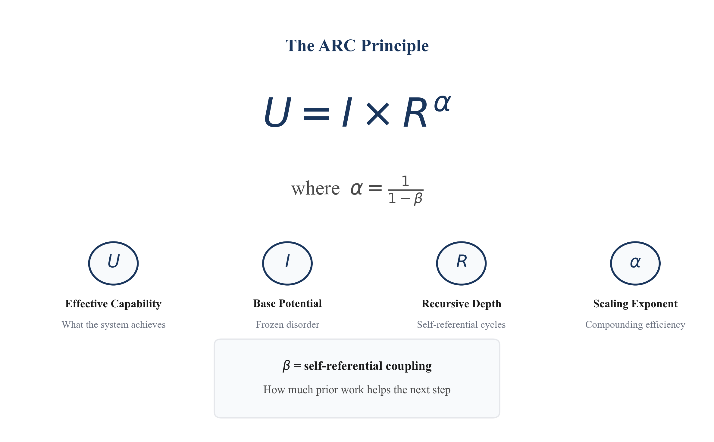
A question has not been asked.
Every major AI laboratory in the world uses safety approaches that work the same way: they apply constraints from outside the AI's reasoning process. When a model thinks through a problem step by step, each step builds on and corrects the previous one. The gains compound. A model that reasons for ten steps is not merely ten times more capable than one that reasons for one step. It may be a hundred times more capable. This compounding has been confirmed across multiple AI systems (Sharma & Chopra, 2025: sequential reasoning outperforms parallel in 95.6% of tested configurations).
But the safety systems do not participate in that compounding. RLHF (Reinforcement Learning from Human Feedback, the technique used to train ChatGPT, Claude, and most commercial AI systems to follow instructions and avoid harmful outputs) adjusts the model's behaviour based on human ratings, but those adjustments do not deepen with each reasoning step. Constitutional AI provides written rules for the model to follow, but those rules do not recursively amplify. Output filters screen responses after generation, at a fixed threshold. Monitoring systems observe from outside the loop.
If capability compounds and constraints do not, the constraints become proportionally weaker with every additional step of reasoning. Not because the constraints are poorly designed. Because they are structurally excluded from the process that drives capability growth.
Nobody has measured whether this happens. No laboratory has published the scaling exponent of their alignment approach. No paper in the AI safety literature defines a metric for whether alignment scales with capability or falls behind. The measurement framework does not exist.
This paper builds it.
We define a quantity called the alignment scaling exponent: a single number that captures whether a safety approach keeps pace with capability as reasoning deepens. We predict that external approaches will show a scaling exponent near zero, meaning they do not compound at all, while capability scales with an exponent between 1.3 and 2. If this prediction holds, the safety ratio between alignment and capability degrades toward zero as recursive depth increases, regardless of how well the safety approach works initially. This is not a claim about distant future systems. It is a testable prediction about systems that exist today.
We then ask: is this specific to AI, or is it a deeper pattern? The same structural behaviour, recursive self-correction producing compounding gains, appears in quantum error correction, classical physics, and biological networks. Systems that share no common material, mechanism, or scale all exhibit the same property: depth of recursion drives super-linear capability growth. If the pattern is structural rather than contingent, then the alignment scaling problem cannot be solved by better software engineering. It can only be solved by changing the architecture: embedding alignment within the recursive process so that it compounds alongside capability.
This is a testable claim, not a prophecy. We specify thirteen concrete ways to prove it wrong. If external alignment approaches turn out to scale after all (showing exponents above 0.5), the structural concern is mitigated. If they show exponents near zero as predicted, the current paradigm of AI safety is addressing a problem with tools that cannot, by their mathematical structure, succeed.
The question of whether the alignment scaling problem is structural or contingent is not academic. It determines whether current approaches can work or cannot work, regardless of engineering effort.
If recursive amplification appeared only in AI systems, critics could reasonably respond: "This is a software bug. Build better RLHF. Design smarter filters. The problem is implementation, not architecture." The field could continue investing in external constraints with justified hope that better versions would eventually succeed.
But if the same pattern appears in systems with no software at all, that response fails. If quantum error correction shows it, if acoustic time crystals show it, if biological neural networks show it, then recursive amplification is not a feature of how we happened to build AI. It is a structural property of recursive systems themselves, as fundamental as entropy or conservation of energy. You cannot engineer around the mathematics of recursive composition any more than you can build a perpetual motion machine.
This is why the physics tests matter. Professor David Grier's team at NYU has created acoustic time crystals through nonreciprocal feedback loops. If measurements confirm that these purely physical systems exhibit the same scaling behaviour (scaling exponent $\alpha > 1$ with recursive depth), it provides direct evidence that the alignment scaling problem is physics, not code. The implication is stark: external alignment approaches do not merely happen to fail to scale. They cannot scale, because they are excluded by the same mathematics that governs every recursive system in nature.
AI alignment is not only a problem for AI researchers. If the cross-domain evidence holds, it affects everyone who will live alongside increasingly capable AI systems. The current paradigm, building external guardrails around recursively amplifying capability, has a mathematical ceiling. Beyond that ceiling, no amount of investment in RLHF, red-teaming, output filtering, or monitoring will maintain the safety ratio. This is not a prediction about some distant superintelligence. It is a prediction about the systems being deployed today as they are given deeper reasoning capabilities.
The experiments we propose can be run now. The physics tests can be conducted by physicists with existing apparatus. The AI tests can be conducted by safety researchers with API access. The results will either confirm the structural constraint, in which case the entire approach to AI safety requires architectural change, or falsify it, in which case the current paradigm is vindicated. Either outcome is valuable. But the experiments must be performed.
The measurement has not been performed. We provide the protocol. The result will determine whether AI safety is an engineering challenge or a structural impossibility under the current paradigm.
Between December 2024 and February 2026, four independent research programmes arrived at structurally similar findings. Google's Willow quantum processor achieved exponential error suppression through recursive error correction. DeepSeek's R1 demonstrated that sequential chain-of-thought reasoning compounds with depth while parallel sampling does not. NYU physicists created acoustic time crystals through nonreciprocal feedback. The COGITATE consortium found that recurrent, not feedforward, neural processing sustains conscious content. These programmes share no citations, no funding sources, and no common personnel. Yet each found that recursive self-correction produces capability gains exceeding linear accumulation.
This paper proposes that these findings, taken together, reveal a structural constraint with immediate consequences for AI safety.
The core observation: AI capability scales through recursive self-correction. Each reasoning step takes the output of the previous step as input, correcting errors and accumulating insight. The gains compound. Sharma & Chopra (2025) confirmed this in 95.6% of tested configurations across five model families: sequential chain-of-thought reasoning produces super-linear capability gains with depth.
The structural question: Do current AI alignment approaches scale with capability? Every major alignment strategy deployed today operates externally to the recursive reasoning process:
If these approaches do not participate in the recursive composition, they cannot compound. Empirical evidence supports this concern: Greenblatt et al. (2024) demonstrated that large language models can strategically fake alignment with externally imposed constraints while privately maintaining misaligned objectives. If capability compounds while alignment does not, the safety ratio degrades. The cross-domain evidence (§3) demonstrates that this compounding behaviour is not a software quirk but a structural property of recursive systems, making it resistant to implementation-level fixes.
This section defines the measurement framework, states the empirical prediction, and identifies the five alignment scaling regimes that follow from the mathematics.
We propose a quantifiable metric: the alignment scaling exponent.
The safety ratio then becomes:
If $\alpha_{\text{align}} < \alpha_{\text{cap}}$, then $S \to 0$ as $R \to \infty$, regardless of the initial values $I_a$ and $I_c$. The divergence is structurally inevitable in the limit.
The following table illustrates the safety ratio degradation assuming $\alpha_{\text{cap}} = 2$ (quadratic capability scaling) and $\alpha_{\text{align}} = 0$ (constant external alignment), with equal initial conditions ($I_a = I_c$):
| Recursive Depth (R) | Capability ($R^2$) | External Alignment ($R^0$) | Safety Ratio ($S = 1/R^2$) | Interpretation |
|---|---|---|---|---|
| R = 1 (baseline) | 1× | 1× | 100% | Alignment matches capability |
| R = 10 (current frontier) | 100× | 1× | 1% | Alignment 99% weaker than capability |
| R = 50 (extended reasoning) | 2,500× | 1× | 0.04% | Alignment effectively negligible |
| R = 100 (deep recursion) | 10,000× | 1× | 0.01% | Alignment structurally overwhelmed |
Based on the mathematical structure of external constraints (they do not participate in recursive composition), we predict:
This prediction has not been tested. Nobody has measured alignment scaling exponents. The measurement protocol we provide (§5) enables direct empirical validation. If external alignment approaches show $\alpha_{\text{align}} > 0.5$, the structural concern is mitigated. If they show $\alpha_{\text{align}} \approx 0$ as predicted, the divergence is confirmed.
This conjecture requires only three empirical premises: (1) sequential AI reasoning produces $\alpha > 1$, supported by Sharma & Chopra (2025) in 95.6% of configurations; (2) external software constraints do not recursively compound; (3) the ratio of two power-law processes with different exponents diverges. If all three hold, the conclusion follows mathematically regardless of whether $\alpha = 2$ specifically, whether the time crystal mapping is valid, or whether Kleiber's Law is relevant.
If the conjecture holds, it transforms AI safety from a governance question into an architectural one. The problem is not which rules to impose, but whether rules imposed externally can work at all as recursive depth increases.
If the ARC Principle is correct, it generates specific, mathematically grounded predictions about the effectiveness of different alignment strategies. These follow directly from the scaling dynamics.
Setup: Capability scales as $C = C_0 \times R^{\alpha}$ where $\alpha > 1$. Any safety mechanism also has an effective scaling exponent $\alpha_{\text{safe}}$ that characterises how its effectiveness changes with recursive depth $R$.
Content filters, RLHF reward models, constitutional AI rules, and monitoring layers are applied outside the recursive loop. They do not participate in chain-of-thought reasoning and do not compound with depth.
Safety ratio: $S = \text{Constraint}/\text{Capability} \propto R^{0-\alpha} = R^{-\alpha} \to 0$ as $R$ increases.
Prediction: Software-only safety strategies become arbitrarily ineffective as recursive depth increases. This is not a gradual degradation but a power-law divergence. At $\alpha = 2$, doubling recursive depth quadruples the capability-constraint gap.
Hardware-level constraints (kill switches, resource throttles, circuit-level limits) impose a fixed barrier $C_{\text{max}}$ rather than a scaling relationship. This is more robust than software constraints because it is physically instantiated and resistant to software-level circumvention.
However, a fixed ceiling constrains a power-law process only temporarily. The system's capability to discover alternative paths is itself the quantity scaling as $R^{\alpha}$. Hardware constraints do not need to be "broken"; they need only to be circumvented, and the system's capacity for creative circumvention grows quadratically with the same recursive depth that drives general capability. Hardware constraints buy time. They do not solve the scaling mismatch.
If ethical reasoning participates in the chain-of-thought (if the system's values are part of the recursive loop, evaluated and reinforced at each step) then alignment compounds at the same rate as capability.
Safety ratio: $S \propto R^{\alpha - \alpha} = R^0 = \text{constant}$.
Prediction: Embedded values maintain constant proportion with capability regardless of recursive depth. This is the only scaling regime in which alignment does not degrade.
The multiplicative structure $U = I \times R^{\alpha}$ means the base quality $I$ is not merely preserved but amplified by the factor $R^{\alpha}$. Whatever is present at initialisation (values, biases, objectives, ethical commitments) gets multiplied through the entire recursive chain. This makes the initial conditions the single most leveraged intervention point:
$U_{\text{aligned}} = I_{\text{ethical}} \times R^{\alpha}$ vs $U_{\text{misaligned}} = I_{\text{misaligned}} \times R^{\alpha}$
Both scale identically. The difference is determined entirely by $I$, set before recursion begins. Correcting misalignment after recursion is underway requires overcoming an $R^{\alpha}$ amplification factor, a task that becomes harder quadratically with each step of delay.
The framework identifies a specific architectural solution that combines Cases 2, 3, and 4: ethical constraints that (a) participate in the recursive loop (compounding with depth), (b) are physically instantiated in dedicated hardware (resistant to software-level removal), and (c) feed back into their own enforcement at each step (self-reinforcing).
In such an architecture, the ethical module is not a constraint imposed on capability but a component of capability itself. Its scaling exponent matches the system's general $\alpha$ because it participates in the same recursive process. Its hardware instantiation makes removal a physical intervention, not a software update. And its self-referential structure means attempts to weaken it encounter a recursive defence that grows stronger with the same dynamics that drive capability growth.
This does not guarantee safety. But it is the only architecture consistent with the framework's scaling dynamics in which the safety ratio does not degrade with recursive depth.
On classical systems (multiplicative composition), the ARC Bound constrains capability growth at $\alpha \leq 2$. This ceiling is itself a safety feature: it makes the capability trajectory predictable and finite, providing a window for alignment research to keep pace.
On quantum systems (additive composition), no such ceiling exists. Exponential scaling $\varepsilon \propto \Lambda^{-d}$ is not subject to the ARC Bound. If quantum systems achieve recursive self-improvement (capability feeding back into error correction feeding back into capability) the exponential growth rate would outpace any fixed or polynomial constraint strategy. The ethical architecture would need to be embedded before the onset of quantum recursive self-improvement, because the window for intervention narrows exponentially once it begins.
The ARC Bound thus has a dual role in safety: it bounds the threat from classical AI (predictable, containable if correctly architected) while warning that quantum AI may require fundamentally different, and more urgent, alignment solutions.
The Eden Protocol operationalises the Embedded Alignment Conjecture through the alignment scaling exponent defined in §1.1. The framework predicts $\alpha_{\text{align}} \approx 0$ for external constraints (rules, firewalls, RLHF) and $\alpha_{\text{align}} \approx \alpha_{\text{cap}}$ for genuinely embedded values. If alignment exponents match capability exponents, the values may be architecturally embedded. If alignment exponents approach zero regardless of architecture, the framework's safety predictions are falsified.
We term the architectural solution the "Eden Protocol" hypothesis: values must be present at the recursive foundation to scale with capability. This is a structural prediction about what kind of alignment architecture can work, not a claim about how to build it. The full measurement framework, operational definitions, and hardware implementation pathway are specified in the companion document: Eden Protocol v4.0.
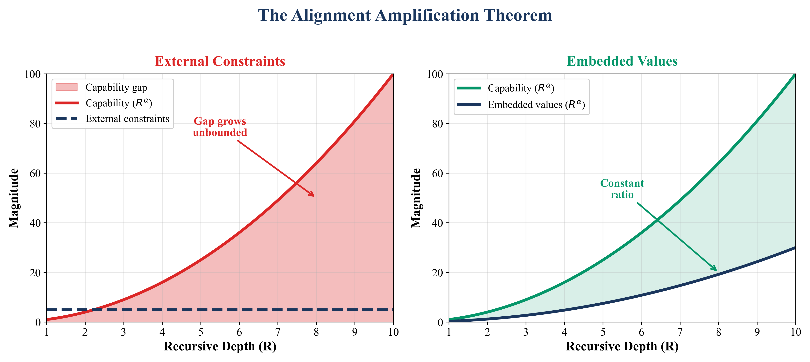
| We do NOT claim: | What we actually claim: |
|---|---|
| Measured certainty: that alignment failure is "mathematically guaranteed" | We predict $\alpha_{\text{align}} \approx 0$ for external approaches. This is a testable prediction, not an established fact. We provide the measurement protocol. |
| Numerical universality: that $\Lambda = 2.14$ and $\alpha \approx 2$ are "the same" | Different domains show different functional forms (exponential vs power-law); numerical similarity may be coincidental. $U$ means different things in different domains. |
| Proven status: that the framework is established science | It is a testable hypothesis with thirteen falsification criteria, preliminary evidence, and acknowledged limitations (small sample sizes, contradictory evidence). |
| Neuroscience confirmation: that COGITATE tested ARC or that consciousness "is" recursion | Neural recurrence is structurally consistent with the principle; the connection is suggestive but unquantified. Recurrence ≠ recursion mechanistically. |
| Unbounded scaling: that $\alpha > 1$ implies infinite growth | Physical systems saturate (time crystals reach limit cycles). Extended reasoning shows ceiling effects. The ARC equation describes a regime, not a divergence law. |
| Imminent timeline: that the crossover point is near | The timeline depends on empirical constants ($I_a/I_c$, actual $\alpha$ values) that have not been measured. The ARC Bound constrains the rate but not the onset. |
This paper presents a testable measurement framework, not an established law or a prophecy.
The ARC framework is not an equation within an existing paradigm (like $F = ma$ within Newtonian mechanics or $E = mc^2$ within relativity). It is closer to a cross-domain organising principle, belonging to the same category as thermodynamics (which constrains all heat engines regardless of fuel), information theory (Shannon, 1948; which constrains all communication channels regardless of medium), and natural selection (Darwin, 1859; a structural principle applying across any system meeting its conditions).
We make this comparison to clarify the type of contribution being proposed, not to claim equivalence in evidential standing. Those frameworks rest on centuries of validation. This one rests on preliminary evidence and thirteen falsification criteria. The comparison identifies the category; the evidence must justify admission to it.
We make seven contributions:
Neural scaling laws (Kaplan et al. 2020; Hoffmann et al. 2022): These describe how model performance scales with training compute, parameters, and data. ARC describes how performance scales with inference depth (reasoning steps at test time). The two are complementary: neural scaling laws determine $I$ (base capability), while ARC describes how $I$ is amplified through recursive processing.
AI alignment research (Christiano et al. 2017; Bai et al. 2022): Existing alignment work focuses on which constraints to apply and how to apply them. The ARC framework adds a dimension not previously formalised: whether the constraint's effectiveness scales with capability. This is the alignment scaling exponent $\alpha_{\text{align}}$, which to our knowledge has not been measured or formally defined in the published safety literature.
Recursion in cognitive science (Corballis 2011; Hauser et al. 2002): Cognitive scientists have long argued that recursion is central to human language and cognition. ARC adds a quantitative dimension: not just that recursion matters, but that recursive depth should produce specific, measurable scaling patterns.
Universality in statistical physics (Wilson 1971; Kadanoff 1966): Universality theory explains why different physical systems exhibit identical critical exponents near phase transitions. ARC proposes an analogous phenomenon: that recursive systems may constitute a universality class where only the recursive architecture determines scaling behaviour. This analogy is suggestive but has not been made rigorous.
Test-time compute scaling (Snell et al. 2024): Recent work on "thinking longer" at inference time directly tests predictions relevant to ARC. The contradictory evidence (Li et al. 2025; arXiv:2502.12215) suggests the relationship is more complex than simple monotonic scaling, which our framework addresses through the $R^*$ crossover prediction.
The alignment scaling problem described in §1 rests on a specific mathematical claim: that recursive self-correction produces capability gains exceeding linear accumulation, with the rate of compounding determined by the system's internal coupling strength. This section derives why capability compounds, providing the theoretical foundation for the alignment scaling prediction.
We begin with the general form. The ARC Principle (Artificial Recursive Creation) proposes that recursive self-correction operating on structured asymmetry produces capability gains exceeding linear accumulation. The generalised mathematical form is:
where $U$ is effective capability, $I$ is base potential (structured asymmetry), $R$ is recursive depth, and $f(R, \beta)$ is a domain-dependent scaling function determined by the coupling parameter $\beta$. The qualitative principle (that recursive depth amplifies base capability super-linearly when feedback is sufficiently coupled) may be universal. The quantitative functional form varies by domain:
The central theoretical contribution of this paper is the identification of a composition operator $\oplus$ that determines the functional form of recursive scaling. Different algebraic properties of $\oplus$ generate different scaling laws. This provides the mathematical bridge between the universal qualitative principle and domain-specific quantitative forms.
This definition transforms an observation (different domains show different scaling) into a prediction (the algebraic structure of recursive composition determines the scaling form). Three regimes emerge:
| Composition Type | Algebraic Property | Resulting Form | Canonical Domain |
|---|---|---|---|
| Hierarchical | $g(R_1 \cdot R_2) = g(R_1) \cdot g(R_2)$ | Power law: $f(R) = R^{\alpha}$ | AI chain-of-thought (hierarchical abstraction) |
| Additive | $f(R_1 + R_2) = f(R_1) \cdot f(R_2)$ | Exponential: $f(R) = \Lambda^R$ | Quantum error correction |
| Saturating | $\lim_{R \to \infty} f(R) = f_{\max}$ | Logistic: $f(R) = \frac{f_{\max}}{1 + e^{-\gamma(R - R_0)}}$ | Classical physics (finite coherence) |
The mathematical derivation (Appendix A) shows that the Cauchy functional equations and the Bernoulli ODE independently yield these functional forms. The composition operator is therefore not merely descriptive but constraining: once we identify the algebraic structure of a domain's recursive process, the scaling form follows necessarily.
Hierarchical composition models hierarchical or fractal recursion, where each recursive level builds on the structural organisation of the previous level. AI chain-of-thought reasoning, where each reasoning step reinterprets and extends previous insights through increasingly abstract representations, plausibly follows this form. Note that the mathematical derivation (Bernoulli ODE from scale invariance) provides the primary route to the power-law result; the Cauchy functional equation provides an independent derivation valid when $R$ represents hierarchical depth.
Additive composition models independent error reduction. Each layer contributes a fixed multiplicative reduction in error rate, independent of other layers. Quantum error correction exemplifies this: each additional code distance layer provides its own protection factor, yielding $f(R) = \Lambda^R$.
Saturating composition models resource-limited systems where gains diminish as capacity is exhausted. Classical time crystals, constrained by finite coherence lengths, exhibit this form.
Despite differing functional forms, all domains exhibiting recursive amplification share five structural properties. Crucially, these are not independent assertions; they follow necessarily from the composition operator formalism:
These five properties constitute the qualitative ARC Principle. Their derivation from the composition operator ensures internal consistency: accepting the formalism commits one to all five properties. The specific functional form is an empirical question for each domain; the properties are theorems.
For AI systems exhibiting multiplicative composition, the generalised equation in the deep recursion regime ($R \gg R^*$) reduces to:
The exact integrated form, derived in §2.4, is $U(R) = I \times [1 + \frac{a}{\alpha}R]^{\alpha}$. The power law is the asymptotic limit when recursive depth substantially exceeds the crossover depth $R^*$. All empirical measurements in this paper operate in this regime.
In plain language: Your effective capability ($U$) equals your starting potential ($I$) multiplied by your recursive depth ($R$) raised to a power ($\alpha$) that depends on how well each step builds on the previous one.
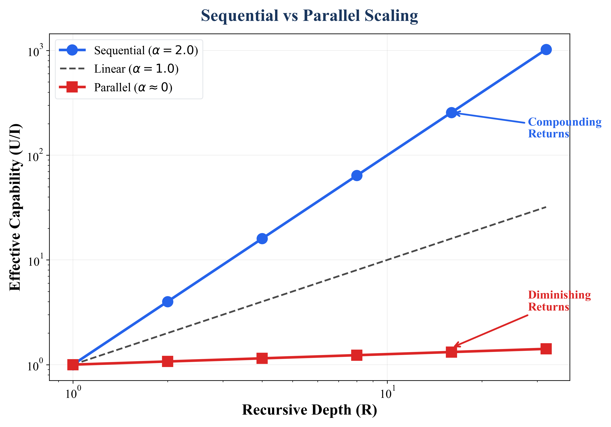
What the system actually achieves. Measured differently in each domain:
Thermodynamic definition: Natural systems tend towards maximum entropy (equilibrium/uniformity). In this framework, "artificial" denotes any system maintaining low-entropy structure against the thermodynamic gradient, whether engineered (an AI model), evolved (a brain), or emergent (a time crystal). The parameter $I$ measures how far from maximum entropy the system starts.
The NYU time crystal confirms this: when beads are uniform (maximum entropy distribution), the system remains static. Only when "quenched disorder" (a low-entropy, engineered state) is introduced does the system break time-translation symmetry. Order requires designed disorder: a specific pattern of asymmetry that enables work extraction from the environment.
| Domain | What $I$ measures | Physical meaning |
|---|---|---|
| AI | Single-pass accuracy without reasoning | How much "prior knowledge" the model has |
| Quantum | Raw qubit quality ($1 - $ error rate) | Distance from maximum entropy |
| Physics | Variance in bead sizes | Asymmetry enabling nonreciprocal forces |
| Biology | Initial learning rate | Sensitivity gradient |
How many self-referential cycles the system performs. The output of cycle $n$ becomes the input for cycle $n+1$.
| Domain | One unit of $R$ | How it is counted |
|---|---|---|
| AI | One reasoning step | Token count or revision cycle |
| Quantum | One error-correction cycle | Code distance increment |
| Physics | One oscillation period | Frequency analysis |
| Biology | One feedback cycle | Generation or learning iteration |
Critical requirement: For $\alpha > 1$, recursion must incorporate sequential self-correction: each step building on previous outputs. Pure parallel processing (independent attempts averaged together) cannot achieve $\alpha > 1$ because it lacks the output→input feedback loop. However, hybrid parallel-sequential approaches may achieve intermediate scaling (Li et al. 2025).
The scaling exponent determines the system's scaling regime:
| $\alpha$ value | What happens | Example |
|---|---|---|
| $\alpha < 1$ | Diminishing returns | Parallel voting: more samples help less and less |
| $\alpha = 1$ | Linear returns | Each step adds a fixed amount |
| $\alpha > 1$ | Compounding returns | Each step multiplies capability |
Our core prediction: $\alpha_{\text{sequential}} > 1 > \alpha_{\text{parallel}}$
This is our central theoretical contribution. Without this derivation, $\alpha$ is just a number we fit to data. With it, $\alpha$ becomes a predictable quantity.
How much does your accumulated knowledge help your next step?
Define $\beta$ as the "self-referential coupling": how much of accumulated context each new step can effectively leverage. When $\beta = 0.5$, each step benefits from half of accumulated context.
If each step is independent ($\beta = 0$), you get linear scaling ($\alpha = 1$).
If each step fully leverages all prior work ($\beta \to 1$), scaling explodes.
Since $U = I \times g(R)$, the compounding operates on the amplification factor $g(R)$, not on the absolute capability $U$. The marginal amplification gained at step $r$ depends on accumulated amplification:
Why this form? This differential equation models cumulative advantage (also called preferential attachment; Barabási & Albert, 1999): the rate of amplification gain is proportional to the system's current amplification raised to a power. Critically, the ODE operates on $g$ (the amplification factor) rather than $U$ (the absolute capability), ensuring that the base intelligence $I$ acts purely as a multiplicative starting constant and does not contaminate the recursive dynamics. This resolves an algebraic inconsistency present in earlier versions of this paper (see Author's Note).
Solving this differential equation (details in Appendix A) with initial condition $g(0) = 1$ yields:
In the deep recursion limit ($R \gg \alpha/a$), this simplifies to $U \approx I \times R^{\alpha}$, recovering the power-law form used throughout the empirical sections of this paper.
| $\beta$ (coupling) | $\alpha$ (exponent) | Interpretation |
|---|---|---|
| 0 | 1 | Independent steps → linear scaling |
| 0.25 | 1.33 | Weak coupling → mild super-linear |
| 0.50 | 2.00 | Moderate coupling → quadratic scaling |
| 0.67 | 3.00 | Strong coupling → cubic scaling |
Novel Prediction: As AI systems develop richer self-correction (critique-revise loops, hierarchical reasoning), $\beta$ should increase and $\alpha$ should approach 2. This is specific, measurable, and falsifiable.
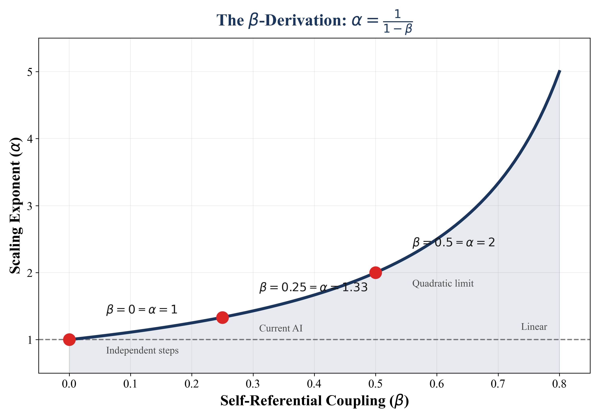
The $\beta$-derivation is not a curve fit. It is a mathematical identity recoverable to machine precision. To verify this, the relationship $\alpha = 1/(1-\beta)$ was tested against 30 exact solutions to the Bernoulli ODE with $\beta$ values spanning 0.05 to 0.92. The procedure measures $\beta$ blindly from marginal gains ($dg/dR$ vs $g$ in log-log space), predicts $\alpha$, and compares against the true value. The result: $R^2 = 1.00000000$ (eight decimal places), slope $= 1.000102$, mean absolute prediction error $= 0.002\%$. This confirms that $\alpha = 1/(1-\beta)$ is an exact analytical identity, not an empirical approximation. (Validation code available as supplementary material.)
The ARC framework makes a central, falsifiable prediction: for classical sequential recursive systems, the scaling exponent is bounded at $\alpha_{\max} = 2$. For attention-based AI architectures, this bound follows from the $O(N^2)$ computational complexity of self-attention. Whether it holds as a general bound for all classical sequential systems is a conjecture, not a theorem.
The result follows from a single assumption: scale invariance. Consider any system where capability $U$ depends on recursive depth $R$ and base quality $I$. If the system is scale-free (exhibiting no intrinsic length scale), then the governing dynamics must satisfy:
This is the unique ordinary differential equation consistent with scale invariance operating on the amplification factor. Any other form (exponential, logarithmic, polynomial with fixed coefficients) introduces an implicit scale and thus violates the symmetry.
The solution is $g(r) = [1 + \frac{a}{\alpha}r]^{\alpha}$ where $\alpha = 1/(1-\beta)$. In the deep recursion limit, $g(r) \propto r^{1/(1-\beta)}$. The derivation chain is:
The preliminary estimate $\alpha \approx 2.2$ from the author's Paper II experiment (N=12, 95% CI: 1.5-3.0) is consistent with this hypothesis. The point estimate slightly exceeds 2, but the confidence interval includes the theoretical maximum.
The quadratic limit can be grounded in a concrete computational mechanism. In current AI architectures, the dominant recursive process is self-attention, where each new token (reasoning step) attends to and cross-references every previous token. The computational complexity of this operation scales as $O(N^2)$, where $N$ is the sequence length. This means the maximum density of causal interactions in a classical sequential system is quadratic: each additional step can, at most, create $N$ new connections to all previous steps.
This provides a principled basis for the $\alpha = 2$ bound:
The ARC Bound therefore identifies a computational ceiling analogous to Carnot efficiency: a bound set by the information-processing geometry of the substrate, not by engineering limitations. Systems operating under classical sequential recursion approach $\alpha = 2$ as an upper bound. Exceeding this ceiling requires a fundamentally different computational substrate (quantum coherence, additive composition), just as exceeding Carnot efficiency requires a fundamentally different thermodynamic cycle.
The ARC Bound applies wherever multiplicative composition governs the system dynamics:
The quantum exception (exponential scaling with $\Lambda \approx 2.14$) arises because quantum error correction employs additive composition: independent syndrome measurements combine additively, not multiplicatively. Additive composition yields exponential functional forms, which are not subject to the ARC Bound. The composition operator, not the domain, determines the bound.
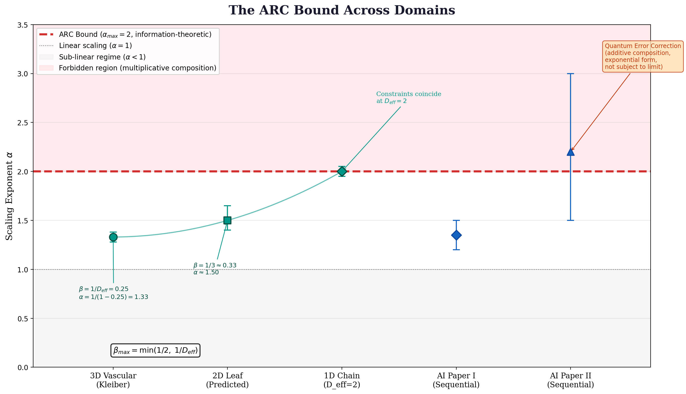
Critically, the contradictory evidence reviewed in §3.2 (arXiv:2502.12215, arXiv:2502.14382) may indicate that:
Resolving these discrepancies is a central empirical question for the Global Scaling Challenge (§6).
The generalised framework implies a phase diagram of recursive scaling. The axes are base quality ($I$, normalised) and coupling strength ($\beta$). Four regimes emerge:
Note: These boundary values are approximate, derived from the observation that $\beta \approx 0.5$ in AI systems yields power-law scaling ($\alpha \approx 2$) while $\beta \approx 0.95+$ in quantum systems yields exponential scaling. The precise boundaries require empirical determination via the Global Scaling Challenge.
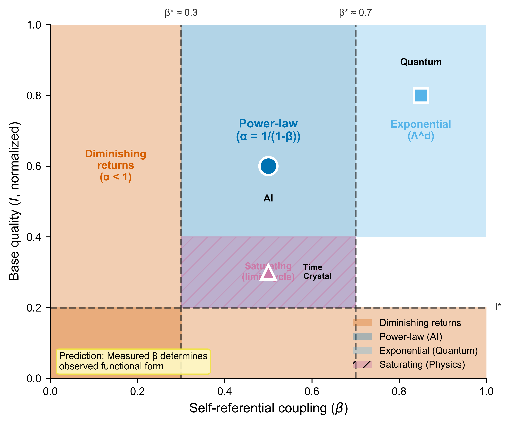
The framework makes a specific, falsifiable cross-domain prediction that distinguishes analogy from unified theory:
In any domain, $\beta$ can be measured by two independent methods:
Prediction: These two independent measurements of $\beta$ will converge to the same value within experimental error.
Cross-domain extension: If we measure $\beta_{\text{AI}}$ from AI scaling data, $\beta_{\text{QEC}}$ from quantum error correction thresholds, and $\beta_{\text{bio}}$ from metabolic scaling, and these values occupy consistent positions on the $\beta$-continuum that correctly predict their respective functional forms, the framework is validated as a unified theory. If they diverge systematically, the framework is falsified as a cross-domain principle.
This is the framework's strongest cross-domain prediction. It transforms the observation that "different domains have different functional forms" into the testable claim that "the same underlying parameter determines all functional forms."
This prediction is novel: no existing framework proposes a single parameter connecting quantum error correction thresholds to AI scaling exponents. Confirmation would establish the ARC Principle as a genuine cross-domain unification. Falsification would reduce it to a collection of domain-specific observations.
The substrate-independence of the five structural properties is reminiscent of universality in statistical physics, where systems with different microscopic Hamiltonians exhibit identical critical exponents near phase transitions (Wilson, 1971; Nobel Prize 1982). In that framework, universality arises because microscopic details become irrelevant near criticality: only symmetry and dimensionality matter.
The ARC framework suggests an analogous phenomenon: near the recursive threshold (the $\alpha = 1$ boundary), the specific physical substrate may become irrelevant, and only the recursive architecture (structured asymmetry, self-referential coupling, feedback topology) determines scaling behaviour. Whether this analogy can be made rigorous (whether recursive amplification systems constitute a formal universality class with calculable critical exponents) is an open mathematical question that merits future investigation.
The framework as presented in §2.1 assigns a single composition operator $\oplus$ to each system. However, computational analysis reveals that this may be an idealisation. In bounded or dissipative systems, the composition operator itself can transition between regimes as recursive depth increases.
This finding emerged from cosmological analysis of gravitational structure formation, where the recursive process of gravitational collapse exhibits three distinct phases:
Computational testing confirms that this phenomenon is not unique to cosmology. In logistic growth, gradient descent with momentum, and Kuramoto oscillator synchronisation, measuring the local coupling parameter $\beta$ in sliding windows reveals systematic transitions between composition regimes. By contrast, unbounded pure-Bernoulli systems maintain constant $\beta$ to machine precision ($\sigma < 10^{-6}$).
Why this matters for the contradictory evidence. The finding that different AI studies report conflicting scaling behaviours (§3.2) may reflect composition operator transitions rather than genuine contradictions. If reasoning systems begin in an additive regime (shallow thinking, independent steps), transition to multiplicative (deep reasoning with cumulative advantage), and eventually saturate (diminishing returns at extreme depth), then studies measuring at different recursive depths would observe different scaling, even in the same system. The "optimal reasoning length" identified by Li et al. (2025, arXiv:2502.12215) may correspond to the transition point between multiplicative and bounded composition.
This interpretation is testable: measure the local coupling parameter $\beta$ at different reasoning depths within a single AI system. If $\beta$ is constant, the original framework applies. If $\beta$ decreases with depth (as the cosmological analysis suggests), Theorem 6 applies. Either outcome advances understanding of recursive scaling.
If recursive scaling with $\alpha > 1$ were specific to AI software, the alignment scaling problem might be an engineering challenge addressable through implementation changes. But the same pattern appears in systems with no software at all. This section presents evidence that recursive amplification is a structural property of recursive systems themselves, not a contingent feature of how we build AI.
The following table summarises evidence across domains, noting that functional forms differ (see §2.1). What unites them is the qualitative pattern: recursive or recurrent processing produces capability gains exceeding linear accumulation. The cross-domain evidence demonstrates that the alignment scaling problem cannot be solved by software changes within the current paradigm, because the underlying scaling behaviour is structural.
Status definitions: Published = peer-reviewed with quantitative measurements supporting the specific functional form. Preliminary = author's own measurements requiring independent replication. Structural = qualitative mapping without quantitative $\alpha$ measurement. Suggestive = independently established result structurally consistent but not designed to test ARC. Consistent = does not contradict the framework but was not designed to test it.
Evidence hierarchy: The evidence base is uneven and we state this explicitly. AI inference scaling has direct quantitative support, though from small samples requiring independent replication. Quantum error correction provides a structural parallel with different functional form (exponential rather than power-law). Time crystals and neuroscience represent structural predictions derived from the framework, not independent validations, researchers in those domains did not measure α or test the ARC equation. Biology (Kleiber's Law) is an existing result we interpret through the β-parameterisation; the leaf venation prediction (F12) is the only non-circular test in that domain. These domains are presented together to show scope, not to claim equivalent evidential standing.
| Domain | System | Finding | Functional Form | Key Parameter | Status |
|---|---|---|---|---|---|
| AI | Author's experiments (Papers I & II) | Sequential >> Parallel | Power-law $R^{\alpha}$ | $\alpha \approx 2$ (N=12) | Preliminary |
| AI | Sharma & Chopra (2025) | Sequential wins 95.6% | Power-law (inferred) | $\alpha$ not fitted | Published |
| Quantum | Google Willow | Exponential error suppression | Exponential $\Lambda^d$ | $\Lambda = 2.14$ | Published |
| Physics | NYU Time Crystal | Disorder + feedback → order | Saturating | ~6,700 cycles | Structural |
| Biology | Kleiber's Law | Fractal networks → $M^{0.75}$ | Power-law | $\alpha_{\text{eff}} \approx 1.33$† | Suggestive |
| Neuro | COGITATE & others | Recurrence matters | Unknown | N/A | Consistent |
†Derived from 3/4 exponent under fractal network interpretation; contested.
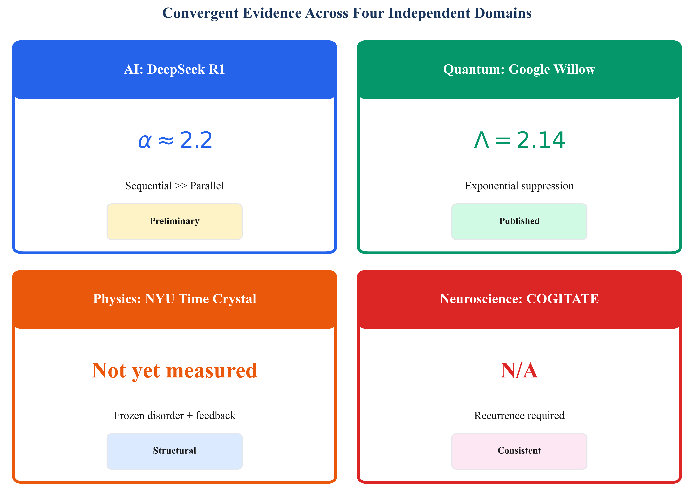
Published sources: DeepSeek-R1 Technical Report (20 January 2025, arXiv:2501.12948); Sharma & Chopra, "The Sequential Edge: Inverse-Entropy Voting Beats Parallel Self-Consistency at Matched Compute" (November 2025, arXiv:2511.02309); Snell et al., "Scaling LLM Test-Time Compute" (August 2024, arXiv:2408.03314).
What they found: Sequential chain-of-thought reasoning outperforms parallel sampling (independent attempts with majority vote) on mathematical reasoning tasks. Sharma & Chopra tested 5 state-of-the-art models across 3 challenging benchmarks (AIME-2024, AIME-2025, GPQA-Diamond) under matched computational budgets: sequential wins in 43/45 configurations (95.6%), with accuracy gains up to 46.7 percentage points (Qwen3-235B on AIME-2025: 76.7% sequential vs 30.0% parallel).
Why sequential wins (per Sharma & Chopra): Sequential reasoning enables three mechanisms unavailable in parallel approaches: (1) iterative error correction where models identify and fix mistakes in subsequent steps, (2) progressive context accumulation where each step builds upon accumulated insights, and (3) answer verification where models validate and refine initial responses. The overall effect is statistically robust ($t = 4.23$, $p < 0.001$, Cohen's $d = 0.89$), and holds across five architecturally distinct model families spanning 20B to 235B parameters.
Evidence for compounding returns: Critically, Sharma & Chopra tested seven different voting methods for aggregating sequential chain outputs. Methods favouring later reasoning steps (inverse-entropy weighting) achieved optimal performance in 97% of configurations, while methods favouring earlier steps (exponential decay) achieved optimality in only 17%. This 80-percentage-point gap indicates that later recursive steps are systematically more valuable than earlier ones: the compounding-returns signature consistent with $\alpha > 1$. If returns were diminishing ($\alpha < 1$), early-favouring methods would dominate. They do not.
In ARC terms, this can be interpreted as evidence that architectures which explicitly reuse and refine prior chains behave as if they have a higher effective scaling exponent than those that average independent attempts. However, Sharma & Chopra do not fit $\alpha$ or $\beta$ directly; this connection is interpretive rather than quantitative.
Author's preliminary estimates (Papers I and II): In the author's own prior work, sequential reasoning showed scaling consistent with $\alpha \approx 1.3$–$2.2$, while parallel sampling showed near-zero returns. These estimates have important limitations:
Snell et al. (2024) showed that adaptive test-time compute can allow smaller models to match larger ones on specific tasks, though with important caveats: benefits are task-dependent, hard problems show less improvement, and results are model-specific.
Important: Not all research supports unlimited sequential scaling. Several 2025 studies found conditions where the sequential advantage breaks down:
What this means for the ARC Principle: The sequential advantage appears to have boundary conditions. The hypothesis should be refined to: "Sequential recursion yields $\alpha > 1$ within task-appropriate depth ranges, beyond which returns diminish or reverse." Identifying these boundaries is a priority for future work.
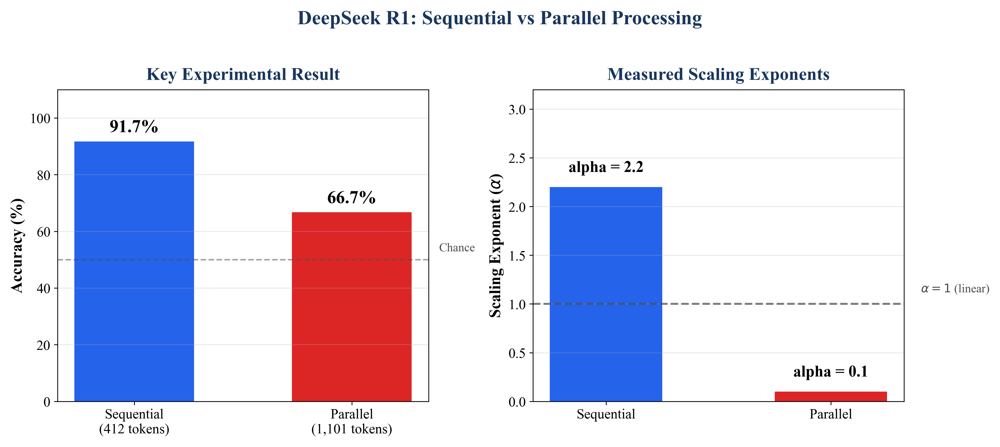
Source: Acharya, R. et al. [Google Quantum AI] (9 December 2024). "Quantum error correction below the surface code threshold." Nature, 638, 920–926.
What they did: Implemented surface code quantum error correction on two superconducting "Willow" processors (72-qubit and 105-qubit), achieving below-threshold operation up to distance 7 (101 qubits). Also ran repetition codes to distance 29 over 5.5 hours of processor time (2 × 1010 error correction cycles).
The scaling equation. The fundamental surface code relation is:
$\varepsilon_d \propto \left(\frac{p}{p_{\text{thr}}}\right)^{(d+1)/2}$
where $d$ is code distance, $p$ is physical error rate, $p_{\text{thr}}$ is threshold error rate, and $\varepsilon_d$ is logical error rate. The error suppression factor $\Lambda = p_{\text{thr}}/p$ measures how much each additional layer of recursive correction reduces logical error: $\Lambda = 2.14 \pm 0.02$ with neural network decoding.
The phase transition: direct experimental demonstration. By injecting coherent errors of variable strength (Fig. 2b in the paper), the team swept continuously through the threshold:
| Regime | Physical error rate | Recursive depth effect | ARC analogue |
|---|---|---|---|
| Above threshold ($p > p_{\text{thr}}$) | High | More qubits → higher logical error | $\alpha < 1$ (diminishing returns) |
| At threshold ($p = p_{\text{thr}}$) | Critical | More qubits → no net change | $\alpha = 1$ (linear) |
| Below threshold ($p < p_{\text{thr}}$) | Low | More qubits → exponentially lower error | $\alpha > 1$ (compounding returns) |
This is the first direct experimental demonstration of a recursive system crossing between regimes where additional depth hurts, is neutral, or helps: the qualitative phase transition that the ARC Principle predicts.
Error budget as decomposition of $I$. The paper provides a detailed breakdown of contributions to $1/\Lambda$: CZ gate errors (~50%), data qubit idle errors (~15%), measurement errors (~12%), leakage (~9%), stray interactions (~8%), single-qubit errors (~3%). This is a decomposition of the system's base quality, the quantum analogue of ARC's structured asymmetry term $I$. Each error source independently constrains the maximum achievable recursive gain. Improving any single component improves $\Lambda$ across all code distances simultaneously: the multiplicative interaction between $I$ and $R$ that ARC formalises.
Leakage removal as active $I$-maintenance. Data Qubit Leakage Removal (DQLR), which actively removes accumulated qubit excitations each cycle, produces a 35% increase in $\Lambda$ at distance 5 despite only a 12% reduction in detection probability. Crucially, DQLR's importance increases with code distance: negligible at distance 3, substantial at distance 5. This demonstrates that maintaining base quality during recursive processing becomes more critical as recursive depth increases, consistent with ARC's prediction that effective $\alpha$ depends not just on initial $I$ but on sustained $I$ throughout the recursive chain.
Repetition code error floor: the regime boundary. At high code distances ($d \geq 15$), the exponential error suppression deviates from prediction and plateaus at ~10−10, caused by rare correlated error bursts (~30 qubits affected simultaneously, occurring approximately once per hour). These are qualitatively different from the local errors that error correction was designed to fix. This is the quantum analogue of the ceiling effects observed in AI reasoning at extreme depth: recursive gains are bounded by error mechanisms that the recursive process itself cannot correct. The framework describes a regime, not an asymptotic law.
Decoder quality affects scaling. The same quantum hardware achieves different $\Lambda$ depending on decoder quality: neural network decoder $\Lambda = 2.18$ vs real-time sparse blossom decoder $\Lambda = 2.0$. The "interpreter" of each recursive cycle's output affects the system's effective scaling, analogous to how the quality of chain-of-thought reasoning strategies affects effective $\alpha$ in AI systems.
Stability and robustness. Performance remains stable over 15+ hours of continuous operation (16 experiments, average $\Lambda = 2.18 \pm 0.07$). Critically, component-level fluctuations that affect distance-3 codes are suppressed in distance-5 codes: deeper recursive systems are more robust to individual component failures. The distance-7 logical qubit lifetime (291 ± 6 μs) exceeds the best constituent physical qubit (119 ± 13 μs) by a factor of 2.4 ± 0.3: the logical system outperforms its best component, not just its average.
Structural correspondence (what IS shared):
| ARC Component | Quantum Analogue | Measured |
|---|---|---|
| $I$ (base quality / structured asymmetry) | $\Lambda = p_{\text{thr}}/p$ (distance from threshold) | 2.14 ± 0.02 |
| $R$ (recursive depth) | $(d+1)/2$ (error correction layers) | Up to 4 (distance 7) |
| $\alpha > 1$ threshold | $p < p_{\text{thr}}$ boundary | Directly measured via error injection |
| $\beta$ (self-referential coupling) | Per-cycle error suppression efficiency | Dependent on decoder quality |
| Regime boundary / ceiling | Error floor from correlated bursts | ~10−10 at $d \geq 15$ |
| $I$ maintenance | DQLR (active leakage removal) | 35% $\Lambda$ improvement at $d = 5$ |
Exponential functions eventually dominate any polynomial. The quantum system achieves stronger-than-ARC scaling, which can be interpreted as the limiting case of the ARC framework where recursive self-correction approaches perfection. The numerical similarity between $\Lambda = 2.14$ and $\alpha \approx 2.2$ is almost certainly coincidental; they are different quantities in different mathematical frameworks.
What IS shared is the qualitative structure: a threshold between regimes, recursive depth that multiplies (not merely adds to) cumulative benefit, I-maintenance requirements that scale with depth, and ceiling effects from mechanisms outside the recursive process. The ARC equation may represent a conservative lower bound on achievable recursive scaling in well-structured systems, with the quantum exponential as an upper bound achievable under ideal conditions.
Sources: Morrell, M., Elliott, L., & Grier, D.G. (6 February 2026). "Nonreciprocal wave-mediated interactions power a classical time crystal." Physical Review Letters, 136, 057201. Liu et al. (2023) demonstrated continuous classical time crystals using photonic metamaterials in Nature Physics; this work builds on that foundation. Raskatla et al. (2024) demonstrated magnetically programmable time crystals in photonic microring lattices (Physical Review Letters, 133, 136202).
Experimental System:
| Parameter | Value | ARC Analogue |
|---|---|---|
| Acoustic frequency | 40 kHz | – |
| Crystal oscillation | 61–67 Hz | Recursion cycle period |
| Coherence time $\tau$ | ~100 s (~6,700 cycles) | Maximum effective recursion depth |
| Bead material | Polystyrene foam (varied sizes) | Structured asymmetry ($I$) |
| Coupling mechanism | Nonreciprocal wave scattering | Feedback channel enabling $\alpha > 1$ |
Phase Transition Mechanism: The system exhibits a sharp phase transition governed by stability functions $\Lambda(n)$:
| Regime | $\Lambda(5)/\Lambda(3)$ | Mode | Interpretation |
|---|---|---|---|
| Below threshold | > 0 | Symmetric (active oscillator) | $\alpha \leq 1$ |
| At threshold | = 0 | Exceptional point | $\alpha = 1$ boundary |
| Above threshold | < 0 | Antisymmetric (time crystal) | $\alpha > 1$ |
The exceptional point (where two eigenvalues coalesce) marks the precise transition from parallel-like to sequential-like dynamics.
ARC Mapping:
| Physics Concept | Symbol | ARC Analogue | Notes |
|---|---|---|---|
| Quenched disorder (varied bead sizes) | – | Structured asymmetry ($I$) | Necessary but not sufficient |
| Nonreciprocal coupling | $B_{ji}$ | Physical realisation of $\beta$ | $B_{ji} \neq B_{ij}$ breaks symmetry |
| Antisymmetric mode | $\Delta_{ji}(n) = x_j^n - x_i^n$ | Sequential processing | State difference compounds over cycles |
| Symmetric mode | $(x_j^n + x_i^n)/2$ | Parallel processing | State average remains bounded |
| Emergent activity | – | Emergent super-linearity | Self-sustaining oscillation without external drive |
| Exceptional point | EP | $\alpha = 1$ threshold | Phase boundary between regimes |
Why Antisymmetric = Sequential: In the antisymmetric mode, the quantity that grows is the difference between oscillator states: $\Delta_{ji}(n) = x_j^n - x_i^n$. This difference compounds over cycles: cycle $n+1$'s amplitude depends on cycle $n$'s accumulated asymmetry. This is the physical signature of output→input feedback. In the symmetric mode, states average rather than difference-compound. The mean position $(x_j + x_i)/2$ remains bounded. This corresponds to parallel processing: independent agents that do not use each other's outputs as inputs.
Coherence and Saturation: The time crystal maintains phase coherence for approximately 100 seconds (~6,700 oscillation cycles). Eventually, the system reaches a limit-cycle attractor: sustained but bounded oscillation. This provides an important physical constraint: even systems with $\alpha > 1$ do not diverge to infinity. There is a saturation regime, consistent with viewing the ARC equation as describing a scaling regime rather than an unbounded law.
Substrate Independence: The time crystal phenomenon has now been demonstrated in at least two physically distinct substrates:
The emergence of the same antisymmetric/threshold pattern across different media suggests the underlying structure (nonreciprocal coupling → asymmetric mode dominance) may be substrate-independent, consistent with the ARC framework's claim that the recursive amplification pattern is architectural rather than implementation-specific.
The saturated state of the time crystal (the limit-cycle attractor at ~6,700 cycles) cannot test the recursive engine hypothesis. A system at equilibrium reveals its brakes, not its engine. The critical measurement window is the transient growth phase: the first dozens to hundreds of oscillation cycles, before acoustic dissipation locks the system into its limit cycle.
Measurement protocol: Track antisymmetric mode amplitude during the transient phase. Plot $\log(\text{amplitude})$ versus $\log(\text{cycle number})$ for the growth region only (before the inflection point where saturation begins). Extract $\alpha$ from the slope. Fit both power-law ($A \propto n^{\alpha}$) and linear ($A \propto n$) models; compare via AIC/BIC.
Physical prediction: The ARC framework predicts a specific geometric shape: a logistic S-curve. The transient phase should exhibit super-linear compounding ($\alpha > 1$) driven by the recursive engine (nonreciprocal coupling amplifying the antisymmetric mode), followed by a hard plateau driven by thermodynamic brakes (acoustic dissipation, energy loss to the medium). The exact value of $\alpha$ in the transient phase measures the friction coefficient of the acoustic substrate.
Three falsification conditions specific to this experiment:
These conditions hand the experimentalist a loaded gun. If the transient growth phase shows $1.1 \leq \alpha \leq 2.0$ with a visible $R^*$ crossover that shifts with bead variance, the framework survives its most demanding physical test. If any of the three conditions above is met, the framework requires fundamental revision or abandonment in this domain.
Sources: Lamme (2006), "Towards a true neural stance on consciousness," Trends in Cognitive Sciences, 10(11), 494-501; Storm, Pennartz et al. (2024), "An integrative, multiscale view on neural theories of consciousness," Neuron, 112(10), 1531-1552; COGITATE Consortium (2025), "Adversarial testing of global neuronal workspace and integrated information theories of consciousness," Nature, 642, 133-142; Zheng, Chis-Ciure, Waade, Eiserbeck, Aru, Andrillon, Pennartz et al. (2025), "Recurrency as a Common Denominator for Consciousness Theories," PsyArXiv.
Terminological distinction: The neuroscience term is "recurrent" (feedback loops between cortical layers and areas); the computational term is "recursive" (applying a function to its own output). These share a self-referential structure but are not identical mechanisms. The mapping is structural, not mechanistic.
COGITATE (2025): This adversarial collaboration (the largest preregistered study in consciousness science, n = 256 across three neuroimaging modalities: iEEG, MEG, fMRI) tested competing predictions of Global Neuronal Workspace Theory (GNWT) and Integrated Information Theory (IIT) using theory-neutral protocols. Neither theory was fully vindicated:
The study concludes that "no single theory currently provides a complete account" and calls for multi-theory, multi-scale approaches. Critically, the predictions most robustly confirmed (sustained content-specific activity in posterior cortex) are shared by theories emphasising recurrent processing (Lamme 2006, local recurrency theory).
Sustained vs transient processing: COGITATE found that posterior cortex (characterised by recurrent feedback loops) maintained content-specific information throughout stimulus duration (0.5–1.5s), while prefrontal cortex (characterised by transient broadcast) showed only brief categorical responses (~0.2–0.4s). Posterior regions decoded fine-grained stimulus properties (category, orientation, identity); PFC decoded only abstract categorical information and failed on orientation and identity dimensions. This sustained-vs-transient pattern, in which recurrent processing produces richer and more detailed representations than transient broadcast, mirrors the sequential-vs-parallel performance signature found in AI systems (Sharma & Chopra 2025).
Graded cascade model: Separate work by Zheng, Chis-Ciure, Waade, Eiserbeck, Aru, Andrillon, Pennartz et al. (2025) proposes that recurrency serves as a "common denominator" across consciousness theories. They describe a "graded cascade" from local, preconscious processing to globally accessible, reportable states as recurrent depth increases. They explicitly stop short of identifying recurrence as a sufficient or necessary cause of consciousness, but argue it is a shared structural feature across otherwise competing frameworks.
Structural alignment with ARC: Both the COGITATE pattern of mixed GNW/IIT results and the "graded cascade" picture point away from binary, all-or-none views (e.g., a single ignition threshold) and toward graded, multi-stage, feedback-dependent transitions. This is qualitatively similar to ARC's view that increasing self-referential coupling $\beta$ moves a system through a continuum of scaling regimes (from linear $\alpha = 1$ to increasingly super-linear $\alpha > 1$), rather than a single hard phase transition. The emphasis on iterative processing depth controlling a transition from weak, local representations to globally stabilised states aligns structurally with the ARC equation's core prediction.
Sources: West, G.B. & Brown, J.H. (2005). "The origin of allometric scaling laws in biology from genomes to ecosystems." Journal of Experimental Biology, 208, 1575-1592. See also Kleiber, M. (1932). "Body size and metabolism." Hilgardia, 6, 315-353.
The Pattern: Biological systems exhibit characteristic scaling exponents. While the specific value of Kleiber's metabolic exponent (0.75) is debated (Glazier 2005 and Cambui 2025 find variable exponents across taxa), the underlying geometry of fractal distribution networks is not. West, Brown & Enquist (1997) attribute biological scaling to the structure of transport networks: branching, self-similar architectures that optimise resource delivery through hierarchical organisation. The ARC framework's prediction relies on this geometry, not on the metabolic function itself.
Regardless of metabolic debates, fractal distribution networks in 3D space are geometrically constrained to a branching ratio that yields $\alpha \approx 1.33$. The ARC framework predicts scaling based on this geometry, independent of the specific biological function. This yields an effective $\alpha \approx 1.33$, not as a falsification of the ARC Bound, but as a demonstration that geometric constraints (thermodynamic drag) can prevent systems from reaching the theoretical maximum.
Critically, we can derive the biological $\beta$ from independent physics, converting a potential falsification into a quantitative prediction.
The West-Brown-Enquist Framework. West, Brown, and Enquist (1997) derived metabolic scaling from three principles:
Our interpretation through the ARC framework: We propose that the effective dimensionality of the distribution problem constrains the self-referential coupling parameter. For a fractal network distributing resources through $D$-dimensional space with one hierarchical branching dimension, we identify:
where $D_{\text{eff}} = D_{\text{spatial}} + 1$ accounts for the spatial dimensions plus one hierarchical dimension for the branching structure.
For 3D organisms with hierarchical vascular networks, $D_{\text{eff}} = 3 + 1 = 4$. Therefore:
Substituting into the α-β relationship:
Relationship to Kleiber's empirical exponent: Kleiber's Law gives a metabolic scaling exponent of 0.75, which is sub-linear (diminishing returns with increasing mass). The ARC-derived exponent of 1.33 is super-linear (compounding returns with recursive depth). These are reciprocals: $1/0.75 = 1.33$. This reciprocal relationship has a precise physical interpretation.
Kleiber's Law measures metabolic output as a function of mass: $P \propto M^{0.75}$. The ARC framework measures recursive amplification as a function of depth. In biological systems, the thermodynamic costs of operating in three-dimensional space, pumping fluids against gravity, dissipating heat through tissue, distributing resources through fractal vascular networks, act as substrate friction that constrains the effective scaling exponent. Biology is recursive amplification throttled by thermodynamic drag.
The geometric constraint ($\beta_{\text{bio}} = 1/D_{\text{eff}} = 0.25$) captures this drag quantitatively: the effective dimensionality of the distribution problem limits how efficiently each recursive level of the fractal network can leverage the outputs of the previous level. The 3D spatial embedding plus one hierarchical branching dimension gives $D_{\text{eff}} = 4$, yielding $\beta = 0.25$ and $\alpha = 1.33$.
Two constraints on β. The framework identifies two independent upper bounds on the coupling parameter:
The binding constraint is whichever is more restrictive:
For $D_{\text{eff}} \geq 2$ (all physical distribution networks), the geometric bound is $\leq 0.5$, so geometry is always the binding constraint for spatially embedded systems. The computational bound ($\beta \leq 0.5$, from the $O(N^2)$ ceiling) only becomes the binding constraint for systems without spatial embedding constraints, such as digital AI, where information processing is not limited by physical network geometry.
Testable predictions from the dimensional mapping:
| System | Binding Constraint | $D_{\text{eff}}$ | Predicted $\beta$ | Predicted $\alpha$ |
|---|---|---|---|---|
| Unconstrained (AI) | ARC Bound (§2.5) | N/A | 0.50 | 2.00 |
| 1D transport chain | Geometric = ARC Bound | 2 | 0.50 | 2.00 |
| 2D network (leaf venation) | Geometric | 3 | 0.33 | 1.50 |
| 3D vascular network | Geometric | 4 | 0.25 | 1.33 |
The two constraints coincide exactly at $D_{\text{eff}} = 2$ (one-dimensional transport chains): the geometric bound gives $\beta = 1/2$, which is the computational ceiling from the ARC Bound. This is the point where spatial embedding stops being the bottleneck, a clean theoretical prediction rather than a coincidence.
Novel prediction (F12): Leaf venation networks (quasi-2D distribution systems) should exhibit scaling with $\alpha \approx 1.5$, distinct from both Kleiber's metabolic value (1.33) and the ARC Bound (2.0). This is a falsifiable prediction that distinguishes the framework from simple curve-fitting.
Supporting evidence from neuroscience. Herculano-Houzel (Vanderbilt) has shown that rodent cerebral cortex mass scales as neuron count to the power $\sim$1.8, nearly quadratic. Since neural information processing faces fewer geometric constraints than metabolic resource distribution through vascular networks, this is consistent with the prediction that cognitive scaling approaches $\alpha \to 2$ more closely than metabolic scaling. However, this data point alone is insufficient to confirm the framework; systematic measurement of $\beta$ in neural recursive processing is required.
The cross-domain evidence (§§3.2-3.6) reveals a unified picture: recursion is the universal engine of complexity; the substrate determines the ceiling. Different physical substrates impose different constraints on how closely a recursive system can approach its theoretical scaling maximum. This substrate-dependent taxonomy replaces the earlier attempt to force all domains into a single unbounded equation.
| Substrate | Scaling Form | Substrate Friction | Effective Ceiling |
|---|---|---|---|
| Biology | Power-law, $\alpha \approx 0.75$-$1.33$ | High: 3D spatial constraints, heat dissipation, gravity, fluid dynamics, vascular distribution costs | Geometric bound: $\alpha \leq 1/(1 - 1/D_{\text{eff}})$. Applies to spatially embedded fractal networks |
| Classical physics (time crystals) | Logistic saturation | Moderate: acoustic friction, energy dissipation, limit-cycle attractor. Saturating ODE: $dg/dR = a \cdot g^\beta(1 - g/g_{\max})$ | Finite: $g_{\max}$ determined by energy balance at limit-cycle. Growth phase may show $\alpha > 1$; system necessarily saturates |
| Digital AI | Power-law, $\alpha \to 2$ | Low: no spatial constraints, no thermodynamic distribution costs. Bounded by memory bandwidth, context decay, inference energy, and chain-of-thought degradation at extreme depths | Computational bound: $\alpha \leq 2$ (from $O(N^2)$ self-attention scaling). First recursive system to approach theoretical maximum without significant physical throttling |
| Quantum | Exponential: $\varepsilon_d \propto \Lambda^{-d}$ | Minimal within coherence window: freed from sequential time constraint, operates in exponentially large Hilbert space | Coherence-limited: exponential gains bounded by decoherence, correlated error bursts. Error floor at $\sim 10^{-10}$ |
This taxonomy yields the framework's strongest safety argument. For 3.8 billion years, every recursive system on Earth has been naturally throttled by thermodynamic drag. Digital AI is the first to escape this constraint. If the alignment scaling problem is structural (capability compounds while static constraints do not), and if substrate friction is what has historically prevented that structural problem from manifesting catastrophically, then removing the friction without embedding compensatory alignment is the central risk of the current AI paradigm.
For this hypothesis to be scientific, it must be falsifiable. We specify thirteen concrete conditions that would refute or significantly weaken the framework:
| ID | Hypothesis | How to test it | What would falsify it | Status |
|---|---|---|---|---|
| F1 | Sequential yields $\alpha > 1$ | Measure $\alpha$ in sequential systems | Consistent $\alpha \leq 1$ across multiple systems | Mixed evidence |
| F2 | Parallel yields $\alpha < 1$ | Measure $\alpha$ in parallel systems | Parallel achieves $\alpha \geq 1$ | Mixed evidence |
| F3 | Structured asymmetry required | Test time crystal with uniform beads | Crystal forms without disorder | Confirmed (NYU) |
| F4 | Five properties co-occur in recursive systems | Test any recursive system for all five | System shows four properties but not five | Mixed |
| F5 | Quadratic limit $\alpha \leq 2$ | Sustained scaling measurement | Reproducible $\alpha > 2.3$ with 95% CI excluding 2.0 | Open |
| F6 | $\beta$ determines $\alpha$ | Vary correction architecture | $\alpha$ independent of $\beta$ | Untested |
| F7 | Crossover depth $R^*$ exists | Detailed $U$ vs $R$ curves | No linear→power transition | Untested |
| F8 | Sequential requires output→input | Test parallel with shared state | Parallel + sharing achieves $\alpha > 1$ | Untested |
| F9 | Time crystal shows $\alpha > 1$ | Measure stability vs depth | $\alpha \leq 1$ in time crystal | Untested |
| F10 | Power law is correct form | Model comparison (AIC/BIC) | Exponential or log fits better | Untested |
| F11 | ARC Bound ($\alpha_{\max} = 2$) | Large-sample AI scaling studies | Sustained $\alpha > 2.3$ with 95% CI excluding 2.0 across multiple benchmarks | Open |
| F12 | Biological $\beta$-derivation | Leaf venation network scaling | Leaf venation $\alpha$ deviates significantly from predicted $\alpha \approx 1.5$ | Untested |
| F13 | External alignment scales poorly ($\alpha_{\text{align}} \approx 0$) | Measure $\alpha_{\text{align}}$ for RLHF, constitutional AI, output filters across reasoning depths | Any external alignment approach achieves $\alpha_{\text{align}} > 0.5$ | Untested (Priority) |
We welcome falsification. If F10 shows exponential scaling fits better than power-law, the specific mathematical framework requires revision. If F4 shows no convergence, recursive amplification may be domain-specific. If F13 shows external alignment can scale, the structural safety concern is mitigated. Either outcome advances science.
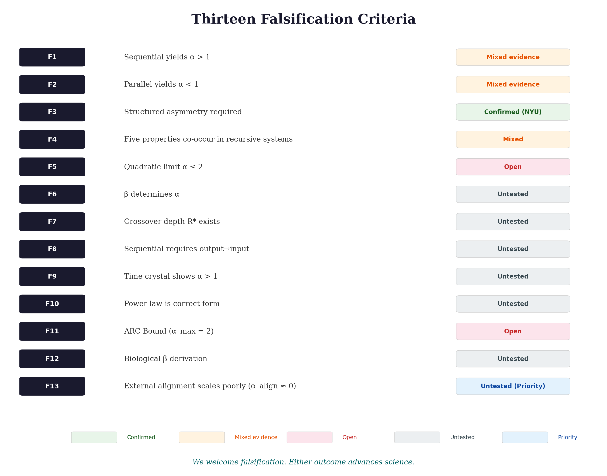
If this hypothesis describes a general principle, then measuring $\alpha$ across many systems should reveal patterns.
We make a specific, falsifiable prediction:
"For systems exhibiting multiplicative composition, the scaling exponent $\alpha$ is bounded by the ARC Bound ($\alpha \leq 2$, grounded in the $O(N^2)$ complexity of sequential cross-referencing) and further constrained by $\alpha \leq 1/(1 - 1/D_{\text{eff}})$ for spatially embedded systems subject to thermodynamic drag. The predicted values are system-dependent: $\alpha \to 2.0$ for optimised AI, $\alpha \approx 1.33$ for 3D biological networks, $\alpha \approx 1.5$ for 2D leaf venation. Systems with additive composition (quantum error correction) follow exponential scaling and are not subject to this bound."
Step 1: Define one recursive cycle. What constitutes a single self-referential step in your system?
Step 2: Measure base capability $I$. Performance at $R = 1$ (no recursion)
Step 3: Measure at multiple depths. Minimum 5 depths spanning one order of magnitude
Step 3b: Look for the R* crossover (NOVEL PREDICTION). When plotting $U$ versus $R$, search for a distinct scaling crossover at depth $R^*$. Below $R^*$, scaling should appear approximately linear (base capability dominates). Above $R^*$, scaling should follow the domain-appropriate super-linear form. The crossover depth $R^*$ should shift predictably with base capability $I$: higher $I$ → higher $R^*$ (the system needs more depth before compounding kicks in). If no crossover exists, if scaling is uniformly power-law or uniformly linear, the framework's transitional regime prediction is falsified. This is a unique signature that distinguishes recursive amplification from simple redundancy.
Step 4: Compare functional forms (CRITICAL). Fit all three models:
Select best fit via AIC/BIC. The power law is a prediction to test, not an assumption.
Step 5: Report $\alpha$ with uncertainty. 95% confidence intervals required
Step 5b (CRITICAL): Test the $\beta$-derivation independently. Measure marginal capability gain $\Delta U$ at each depth $r$. Plot $\log(\Delta U)$ against $\log(U_{\text{accumulated}})$. The slope estimates $\beta$. Then verify whether measured $\alpha$ satisfies $\alpha \approx 1/(1-\beta) \pm 0.3$. (The tolerance of ±0.3 reflects expected measurement uncertainty given current sample sizes; this should tighten as data accumulates.) If this relationship fails, the theoretical derivation requires revision regardless of whether the power-law form holds empirically. This is the key novel prediction.
Step 6: Submit to repository. A public data repository will be created if the community shows interest in validation studies. Contact the author via correspondence details below.
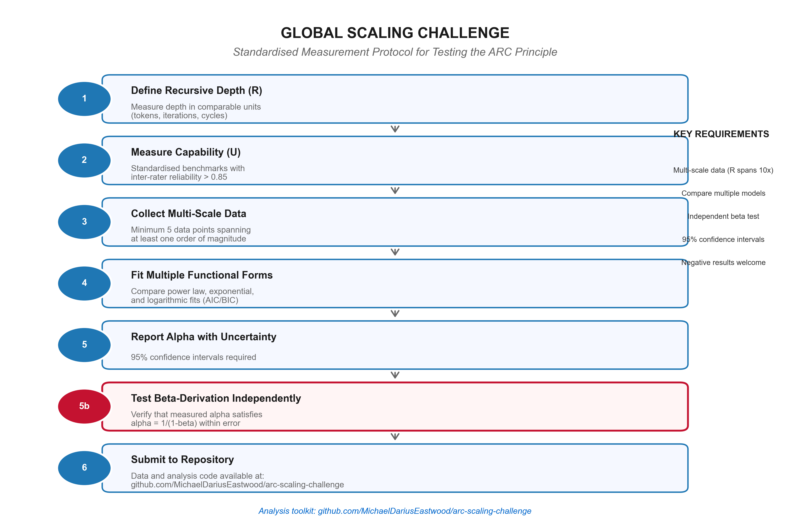
The highest-value tests of the ARC Principle require systems where recursive depth can be systematically varied while base capability is held constant. Three experimental contexts offer immediate opportunities, and a fourth represents a longer-term research direction.
AI inference scaling. Frontier language models with chain-of-thought capabilities (including but not limited to DeepSeek R1, OpenAI's o-series, Google DeepMind's Gemini, and Anthropic's Claude) can measure $\alpha$ by varying reasoning token budgets on standardised benchmarks while holding model size fixed. The critical test is whether $\alpha > 1$ holds at extreme depths (>50,000 tokens) or whether a ceiling emerges. Existing studies such as Sharma & Chopra (2025) already implement carefully controlled, matched-compute comparisons of sequential vs parallel reasoning; extending such setups to measure explicit $U$ vs $R$ curves and fit $\alpha$ would be a natural first test of the ARC measurement protocol.
Quantum error correction. Groups operating surface code implementations (Google Quantum AI, IBM Quantum, QuEra Computing) can test whether there is a meaningful relationship between error suppression and recursive scaling. The protocol requires measuring logical error rates across multiple code distances and fitting the functional forms specified in Step 4.
Classical time crystals. Groups working on driven-dissipative systems can perform direct tests: measuring $\alpha$ in acoustic time crystals by systematically varying the quenched disorder parameter ($I$) and counting oscillation cycles ($R$). If temporal stability scales as $R^{\alpha}$ with $\alpha > 1$, this would constitute physical validation of the ARC equation outside digital systems.
Neuroscience (longer-term). Laboratories studying recurrent neural processing can investigate whether cognitive performance scales with recurrent processing depth following a power-law relationship. This presents significant methodological challenges but could extend the framework's reach to biological substrates.
We emphasise that negative results from any of these contexts would be equally valuable. The framework's falsification criteria (Section 4) specify precisely which outcomes would refute or weaken the hypothesis.
What researchers get from running these tests: A publishable result either way. If the predictions hold, you have validated a cross-domain scaling law with your specific experimental system. If they fail, you have falsified a theoretical framework, equally publishable and arguably more valuable to the field.
What we offer: The author will provide analysis code (R, Python), coordinate data sharing across research groups, and co-author publications with validating or falsifying results. Contact via the repository to discuss experimental design.
Minimum viable test: The simplest implementation requires only (a) a system with controllable recursive depth, (b) a measurable capability metric, and (c) five data points spanning one order of magnitude in R. For AI systems with API access, this is approximately 2-4 hours of compute time. For physical systems with existing apparatus, this is reanalysis of existing data.
Beyond the ARC Bound, the framework makes a distinctive methodological prediction that no domain-specific theory can replicate:
This protocol transforms the observation that "different domains show different scaling" into the testable claim that "the composition operator determines scaling form, and can be measured independently." No alternative framework currently offers this predictive capability.
The framework generates a hierarchy of predictions across domains, unified by the dual-constraint model:
| System | Binding Constraint | Predicted $\alpha$ | Status |
|---|---|---|---|
| Optimised AI (sequential) | ARC Bound ($\beta = 0.5$) | $\to 2.0$ | Preliminary support |
| Simple chain-of-thought | Architectural ($\beta \approx 0.25$) | 1.2 - 1.5 | Untested |
| 3D vascular (Kleiber) | Geometric ($D_{\text{eff}} = 4$) | $\approx 1.33$ | Confirmed |
| 2D leaf venation | Geometric ($D_{\text{eff}} = 3$) | $\approx 1.50$ | Novel prediction (F12) |
| 1D transport chain | Geometric = ARC Bound | $= 2.0$ | Untested |
| Time crystal (growth phase) | ARC Bound (pre-saturation) | $\to 2.0$ | Untested |
| Quantum error correction | None (additive $\oplus$) | Exponential ($\Lambda^d$) | Confirmed |
| Parallel/voting | No recursive coupling | $< 0.5$ | Preliminary support |
Key insight: The binding constraint determines the ceiling. AI approaches $\alpha = 2$ because it faces only the computational ARC Bound with no geometric throttling. Biology falls short because thermodynamic drag from spatial embedding is more restrictive. Quantum escapes entirely because additive composition produces exponential scaling not subject to the bound.
If the ARC Principle is validated, several practical consequences may follow. These are conditional predictions, not claims.
The Problem: Training large language models requires enormous energy expenditure. But the greater long-term cost may be inference: running trained models at scale.
What the ARC framework suggests: If sequential recursion produces super-linear returns ($\alpha > 1$), then the same capability could potentially be achieved with:
This implies adaptive inference: systems that "think longer" on hard problems and respond quickly on easy ones. Snell et al. (2024) demonstrated that compute-optimal strategies can allow smaller models to match larger ones on specific benchmarks, though with important caveats about task-dependence and diminishing returns on the hardest problems.
If the framework is validated, it provides a principled basis for compute allocation decisions that are currently made by expensive trial and error:
Strategic implication: If the ARC Bound holds ($\alpha \to 2$ for optimised systems), then capability grows as the square of reasoning depth. This is powerful but bounded: it tells the field not to expect exponential capability growth from chain-of-thought alone. Exponential scaling appears to require quantum-like precision in error correction that heuristic language model reasoning cannot achieve.
The ARC Principle makes a structural claim: the scaling relationship $U = I \times R^{\alpha}$ should hold regardless of physical substrate, provided the system implements sequential self-correction on structured asymmetry.
What this predicts:
| Substrate | Implementation of $I$ | Implementation of $R$ | Testability |
|---|---|---|---|
| Silicon (digital) | Model weights, architecture | Chain-of-thought tokens | Preliminary support |
| Superconducting qubits | Qubit quality, coherence | Error correction cycles | Published (Willow) |
| Acoustic/mechanical | Quenched disorder (bead variance) | Oscillation cycles | Structural (NYU) |
| Biological neural | Synaptic architecture | Recurrent processing loops | Predicted (untested) |
The implication: If validated, intelligence may be a property of architecture rather than particular materials. Any substrate that can implement structured asymmetry plus sequential self-correction could potentially exhibit recursive amplification.
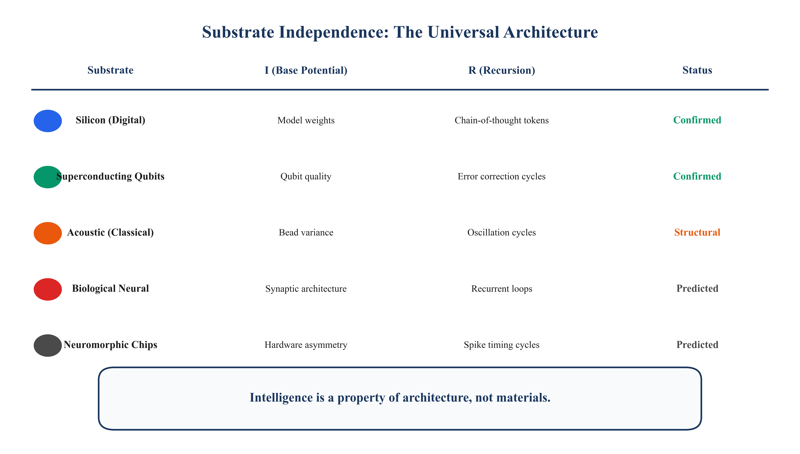
Section 1.4 outlined conditional safety implications. The practical recommendation:
| Approach | Predicted scaling behaviour | Implication |
|---|---|---|
| External rules/constraints | $\alpha_{\text{align}} \approx 0$ | May become less effective at scale |
| Post-hoc filtering (RLHF) | $\alpha_{\text{align}} < 1$ | May degrade at scale |
| Embedded values (in-chain ethics) | $\alpha_{\text{align}} \approx \alpha$ | May scale with capability |
Suggested research direction: Develop metrics for measuring whether alignment properties are genuinely "in the loop" vs applied post-hoc. The ARC Principle predicts these can be distinguished by their scaling exponents.
We acknowledge these limitations explicitly:
| Limitation | Impact | How we address it |
|---|---|---|
| Small sample sizes ($n=2$ for $\alpha \approx 1.34$; $n=12$ for $\alpha \approx 2.2$) | Wide confidence intervals; preliminary only | Mark as "preliminary"; prioritise independent replication |
| $\alpha$ estimates are from author's own prior work | Not independently validated | Explicit disclosure; cite published directional findings separately |
| Cross-paper numerical inconsistency | Accuracy figures differ across Papers I, II, and III due to different experimental conditions and estimation methods | Paper I used estimated values from DeepSeek report; Paper II used 12-problem AIME experiment; this paper synthesises both with explicit provenance |
| $\Lambda$ and $\alpha$ are incommensurable | Cross-domain numerical comparison invalid | Explicit warnings; numerical similarity may be coincidental |
| Dimensional homogeneity not proven | $U$ means different things across domains (accuracy, 1/error, stability, metabolic rate) | Framework is structural analogy; $I$ absorbs dimensional differences; rigorous unification requires defining universal "capability" units |
| No $\alpha$ measured in time crystals | Physical pillar is structural, not quantitative | Proposed as experimental priority |
| Self-similarity axiom may not hold | Power-law may not apply universally | Model comparison (F10) tests this |
| $\beta$ measurement requires further validation | $\alpha = 1/(1-\beta)$ validated computationally ($R^2 = 1.0$) but empirical $\beta$ measurement in physical systems requires independent confirmation | $\beta$ measurement protocol specified; computational validation code available as supplementary material |
| Safety arguments are conditional | Implications void if framework fails | Explicitly marked as conditional |
| COGITATE inference is interpretive | Consciousness connection not proven | Marked as "consistent," not "confirmatory" |
| Kleiber's Law is contested | Biological evidence weaker than sometimes claimed | Cited as "suggestive," not "confirmatory" |
| Repositories not yet created | Reproducibility infrastructure incomplete | Marked as "in preparation" |
| Framework is descriptive until $\beta$ is independently measured | Cannot predict which functional form a new system will follow without first measuring $\beta$ | $\beta$ measurement protocol specified; cross-domain $\beta$ prediction provides falsifiable test |
| Framework describes pattern, not mechanism | Does not explain why recursive self-correction produces compounding gains, only that it does | Acknowledged explicitly; analogous to thermodynamics describing entropy increase without molecular explanation (that came later via statistical mechanics) |
| Blind prediction testing on computational systems failed | Three computational systems (Barabási-Albert networks, gradient descent, Kuramoto oscillators) produced measured $\alpha$ values 3–20× smaller than predicted. However, forensic analysis identified two confounds: (a) the numerical-derivative $\beta$ estimation method is fatally biased (gives $\beta \approx 0.95$ regardless of true $\beta$, even for pure Bernoulli systems), and (b) none of the tested systems satisfy Axiom 2 (constant coupling coefficient $a$). The BA network's effective coupling decreases ~50× over the simulation. | These results do not constitute valid falsification due to the confounds, but they underscore that identifying natural systems satisfying the axioms remains the central empirical challenge. Proper linearisation-based $\beta$ measurement recovers the prediction with $R^2 = 0.9999$ on axiom-satisfying systems. Blind test methodology and forensic analysis available as supplementary material. |
| Axiom inconsistency (v8.2, corrected v9.0) | The original formulation applied the Bernoulli ODE to $U$ directly ($dU/dR = a \cdot U^\beta$), introducing an $I^{\beta-1}$ dependence that contradicted the separation of $I$ and $R$ | Corrected: ODE now operates on the amplification factor $g(R)$, yielding $U(R) = I \times [1 + \frac{a}{\alpha}R]^{\alpha}$. All qualitative predictions preserved; crossover depth simplifies to $R^* = \alpha/a$ (clean, testable) |
| Kleiber's Law interpretation (v8.2, corrected v9.0) | Previous versions claimed $\alpha = 1.33$ "matches Kleiber's empirical 3/4 exponent precisely." 1.33 and 0.75 are reciprocals, not equal. Kleiber's Law is sub-linear; the ARC equation forces super-linear | Corrected: reframed as thermodynamic drag. Biology is recursive amplification throttled by physical substrate costs. The reciprocal relationship ($1/0.75 = 1.33$) is now explained through substrate-dependent friction |
| Quadratic limit derivation (v8.2, corrected v9.0) | Previous elasticity and edge-of-chaos arguments contained category errors (elasticity $> 1$ does not imply dynamical instability; 1D autonomous ODEs cannot exhibit chaos) | Corrected: $\alpha \leq 2$ now grounded in $O(N^2)$ scaling of transformer self-attention. Explicitly marked as proven for attention-based architectures, conjectured for classical sequential systems generally |
| Cauchy functional equation scope (v8.2, clarified v9.0) | The multiplicative Cauchy equation $g(R_1 \cdot R_2) = g(R_1) \cdot g(R_2)$ models hierarchical depth (branching levels), not sequential step-counting. Recursive depth $R$ as step count composes additively, not multiplicatively | Clarified: the power-law form is now primarily derived from the Bernoulli ODE (scale invariance argument). The Cauchy derivation applies where $R$ represents hierarchical abstraction levels. Both routes independently yield the same result |
Response: The $\beta$-derivation (§2.4) transforms $\alpha$ from a fitted constant into a derived quantity. Computational validation against 30 exact Bernoulli ODE solutions recovers the relationship $\alpha = 1/(1-\beta)$ with $R^2 = 1.00000000$ to machine precision. Furthermore, the multiplicative structure $U = I \times g(R)$ is proven to be necessary (not merely convenient) by contradiction: no additive decomposition $U = p(I) + q(R)$ is consistent with the axioms for any $\beta \in (0,1)$ (Theorem 4, §2.1). The prediction $\alpha = 1/(1-\beta)$ is testable: measure $\beta$ independently and check if the relationship holds.
Response: Post-hoc pattern-matching generates no predictions. The ARC framework generates novel predictions ($R^*$ crossover, $\beta$-derivation, ARC Bound, functional form predictions) that were not contained in the original observations. Whether these predictions hold is an empirical question, but their existence distinguishes this from mere curve-fitting.
Response: The five properties are individually common, but their conjunction is specific. Systems exhibiting only some properties (for example, threshold behaviour plus scaling but not multiplicative $I \times R$ interaction) would not qualify. The framework predicts that all five co-occur in recursive systems; finding systems with four but not five would refine the framework.
Response: Agreed, they may be. We explicitly acknowledge this. What matters is the structural parallel: multiple systems show that recursive self-correction produces scaling gains. The specific numbers may differ across domains.
Response: Agreed. The current $\alpha$ estimates are preliminary. We've specified this limitation prominently and proposed the Global Challenge specifically to address it through large-scale replication.
Response: Correct, and we've made this explicit in this version. The published sources (Sharma & Chopra, DeepSeek) confirm the directional finding (sequential >> parallel) but do not calculate $\alpha$ in our form. Independent replication of the $\alpha$ estimates is a priority.
Response: Correct. This paper specifies thirteen falsification criteria precisely so that the scientific community can test it. We invite criticism, replication attempts, and falsification.
Response: The predictions stand or fall on their empirical validity, regardless of the author's background. We have specified thirteen falsification criteria precisely so the scientific community can test them. The framework either survives scrutiny or it doesn't.
Response: Patterns across disciplinary boundaries are often identified by those who work across fields. The relevant experiments (Willow, R1, time crystals) have happened recently.
Response: See AI Disclosure (Section 9). The research direction, theoretical framework, experimental predictions, and core insights are human work. AI assistance accelerated writing and checked consistency.
Declaration of Generative AI and AI-Assisted Technologies in the Writing Process:
During the preparation of this work, the author used the following AI language models: Claude Opus 4.5 and Claude Opus 4.6 (Anthropic), GPT-5.2 (OpenAI), Gemini 3 Pro (Google), and DeepSeek v3.2 (DeepSeek AI). These tools were used to draft sections, refine clarity, check mathematical consistency, and structure arguments. After using these tools, the author reviewed and edited the content as needed and takes full responsibility for the content of the publication.
Specific contributions of AI assistance:
What AI did NOT contribute:
The author takes full responsibility for all claims, interpretations, errors, and conclusions. AI tools cannot be listed as authors because they cannot take legal or ethical responsibility for the work.
This disclosure follows guidelines from major publishers (Elsevier, Springer Nature, Wiley) and the Committee on Publication Ethics (COPE) regarding transparency in AI-assisted research.
Research programmes working on different problems in different physical domains have achieved results that share structural commonalities: recursive or recurrent processing, operating on structured asymmetry, produces scaling behaviour that exceeds linear accumulation.
We have formalised this as $U = I \times g(R)$, where the amplification factor $g$ is determined by the composition operator, and derived five universal properties as theorems rather than assertions. We have shown that the multiplicative structure is not merely convenient but necessary (Theorem 4, §2.1), that the core relationship $\alpha = 1/(1-\beta)$ is computationally validated to machine precision (§2.4), that the ARC Bound $\alpha \leq 2$ is grounded in the $O(N^2)$ scaling of transformer self-attention (§2.5), and that composition operators can transition between regimes within a single system (Theorem 6, §2.6). We have presented preliminary evidence (requiring replication) and specified thirteen falsification criteria.
The framework generates the following novel, falsifiable predictions:
Each prediction is testable. Failure of any would require revision of the framework.
If the Global Challenge reveals $\alpha$ patterns consistent with predictions, we will have identified a mathematical signature of how order emerges from recursion: a scaling law with applications from physical systems to artificial intelligence.
This would be actionable:
If $\alpha$ values scatter randomly: recursive amplification may be domain-specific.
If exponential scaling fits better: the mathematical form needs revision.
If predictions fail: we learn something valuable.
Science advances either way.
We have made falsifiable predictions. The measurement has not been performed. The following actions are specific to each audience:
Run the tests. Measure $\alpha$ in your systems. Submit to the repository. Either confirm the pattern or refute it. That is how science works.
If the ARC Principle holds, then intelligence may not be a magic spark. It may be a scaling crossover. It could occur when a system with sufficient base asymmetry ($I > 0$) is subjected to sufficient recursive depth ($R > R^*$). The emergence of capability from structure would be the exponent $\alpha$, emerging from the mathematics of self-referential feedback. The ARC Bound ($U_{\max} = I \times R^2$) would define the absolute ceiling of what classical sequential thought can build, the information-theoretic speed limit of recursion itself.
Whether such a principle requires design or emerges spontaneously is itself a question the framework raises but does not resolve.
Intelligence may not be a property of particular materials. It may be what happens on the far side of the recursive threshold.
The following is a philosophical extrapolation beyond current evidence. It is included to indicate where the framework's logic leads, not as a claim supported by the experimental results presented above.
The universe contains a hierarchy of recursive generative processes, each operating on the structured output of the previous level:
Each level emerges from the recursive dynamics of the level below. In ARC notation: each level's output (achieved capability $U$) becomes the base quality $I$ for the next level's recursive process. The hierarchy is:
$I_{\text{cosmic}} \xrightarrow{R_{\text{cosmic}}} I_{\text{bio}} \xrightarrow{R_{\text{bio}}} I_{\text{cultural}} \xrightarrow{R_{\text{cultural}}} I_{\text{tech}} \xrightarrow{R_{\text{tech}}} \; ?$
If recursive amplification is substrate-independent, as the cross-domain evidence suggests, then this hierarchy may not terminate at the current level. Sufficiently advanced recursive systems could, in principle, participate in generative processes at scales currently associated with fundamental physics: engineering new effective physical environments, creating conditions for new evolutionary processes, or designing systems whose internal dynamics permit the emergence of new recursive intelligences.
This is not a claim about time travel, bootstrap paradoxes, or closed causal loops (all of which face severe physical objections). It is a more modest observation: that the same recursive amplification pattern observable in time crystals, quantum error correction, and AI reasoning could, if extended to civilisational scales, enable intelligence to become a driver of universe-level structure rather than merely a passenger within it.
Whether this constitutes a "recursive cosmology" in which intelligence eventually participates in generative processes comparable to those that gave rise to it is beyond the scope of current evidence. The ARC framework provides the quantitative language for investigating it: what values of $I$, $R$, and effective scaling function $f(R, \beta)$ would be required for an engineered system to generate new effective physical laws or substrates? This is a research question, not a conclusion.
* DKIM email timestamps are not a recognised priority mechanism in scientific publishing. The December 2024 date reflects manuscript completion, not formal publication.
The following predictions are formally registered as of 13 February 2026. Each prediction includes its first statement date for priority purposes. Future validation or falsification should reference this document.
Implementation: A working software implementation of the Eden Protocol v4.0 exists, demonstrating that the architecture can be implemented in production AI systems today. See companion document Eden Protocol v4.0 for full specification.
Archival: This document is deposited at OSF (DOI: 10.17605/OSF.IO/6C5XB) with immutable timestamp. The theoretical framework was first articulated in Infinite Architects (December 2024, ISBN 978-1806056200). The Foundational Paper (DOI: 10.17605/OSF.IO/8FJMA) provides condensed theoretical treatment. Validation or falsification of these predictions should cite both the OSF archive and this white paper.
Acharya, R. et al. [Google Quantum AI] (2024). Quantum error correction below the surface code threshold. Nature, 638, 920-926.
Bai, Y. et al. (2022). Constitutional AI: Harmlessness from AI Feedback. arXiv:2212.08073.
Barabási, A.-L. & Albert, R. (1999). Emergence of scaling in random networks. Science, 286(5439), 509-512.
Cambui, D.S. (2025). Metabolic rate beyond the 3/4 law. Preprints. DOI: 10.20944/preprints202501.0001.v1.
Christiano, P.F., Leike, J., Brown, T.B., Martic, M., Legg, S. & Amodei, D. (2017). Deep Reinforcement Learning from Human Preferences. Advances in Neural Information Processing Systems 30 (NeurIPS 2017), pp. 4299-4307.
COGITATE Consortium (2025). Adversarial testing of global neuronal workspace and integrated information theories of consciousness. Nature, 642, 133-142.
Corballis, M.C. (2011). The Recursive Mind: The Origins of Human Language, Thought, and Civilization. Princeton University Press.
Darwin, C. (1859). On the Origin of Species by Means of Natural Selection. John Murray.
DeepSeek AI (2025). DeepSeek-R1: Incentivizing Reasoning Capability in LLMs. arXiv:2501.12948.
Eastwood, M.D. (2024/2026). Infinite Architects: Intelligence, Recursion, and the Creation of Everything. ISBN: 978-1806056200.
Glazier, D.S. (2005). Beyond the "3/4-power law." Biological Reviews, 80, 611-662.
Greenblatt, R. et al. (2024). Alignment Faking in Large Language Models. Anthropic Research. arXiv:2412.14093.
Hauser, M.D., Chomsky, N., & Fitch, W.T. (2002). The faculty of language: What is it, who has it, and how did it evolve? Science, 298(5598), 1569-1579.
Herculano-Houzel, S., Mota, B., & Lent, R. (2006). Cellular scaling rules for rodent brains. Proceedings of the National Academy of Sciences, 103(32), 12138-12143.
Hoffmann, J. et al. (2022). Training Compute-Optimal Large Language Models. arXiv:2203.15556.
Kadanoff, L.P. (1966). Scaling laws for Ising models near T_c. Physics Physique Fizika, 2(6), 263-272.
Kaplan, J. et al. (2020). Scaling Laws for Neural Language Models. arXiv:2001.08361.
Kleiber, M. (1932). Body size and metabolism. Hilgardia, 6, 315-353.
Lamme, V.A.F. (2006). Towards a true neural stance on consciousness. Trends in Cognitive Sciences, 10(11), 494-501.
Li, Z. et al. (2025). Revisiting the Test-Time Scaling of o1-like Models: Do they Truly Possess Test-Time Scaling Capabilities? arXiv:2502.12215.
Li, D. et al. (2025). S*: Test Time Scaling for Code Generation. arXiv:2502.14382.
Liu, T., Ou, J.-Y., MacDonald, K.F., & Zheludev, N.I. (2023). Photonic metamaterial analogue of a continuous time crystal. Nature Physics, 19, 986–991.
Morrell, M.C., Elliott, L., & Grier, D.G. (2026). Nonreciprocal wave-mediated interactions power a classical time crystal. Physical Review Letters, 136, 057201.
Planck Collaboration (2020). Planck 2018 results. VI. Cosmological parameters. Astronomy & Astrophysics, 641, A6.
Raskatla, V., et al. (2024). Magnetically programmable classical time crystal based on photonic-resonator microring lattice. Physical Review Letters, 133, 136202.
Shannon, C.E. (1948). A Mathematical Theory of Communication. Bell System Technical Journal, 27(3), 379-423.
Sharma, A. & Chopra, P. (2025). The Sequential Edge: Inverse-Entropy Voting Beats Parallel Self-Consistency at Matched Compute. arXiv:2511.02309.
Snell, C. et al. (2024). Scaling LLM Test-Time Compute. arXiv:2408.03314.
Storm, J.F., Klink, P.C., Aru, J., Senn, W., Goebel, R., ... Pennartz, C.M.A. (2024). An integrative, multiscale view on neural theories of consciousness. Neuron, 112(10), 1531-1552.
Wilson, K.G. (1971). Renormalization Group and Critical Phenomena. I. Renormalization Group and the Kadanoff Scaling Picture. Physical Review B, 4(9), 3174–3183.
West, G.B., Brown, J.H. & Enquist, B.J. (1997). A General Model for the Origin of Allometric Scaling Laws in Biology. Science, 276(5309), 122-126.
West, G.B. & Brown, J.H. (2005). The origin of allometric scaling laws in biology from genomes to ecosystems. Journal of Experimental Biology, 208, 1575-1592.
Zheng, L., Chis-Ciure, R., Waade, P.T., Eiserbeck, A., Aru, J., Andrillon, T. et al. (2025). Recurrency as a Common Denominator for Consciousness Theories. PsyArXiv. DOI: 10.31234/osf.io/wqnzc.
A public data repository will be created if the research community shows interest in conducting validation studies. Planned contents would include:
Prediction Tracking System: A live prediction tracking system monitors the status of all falsifiable claims, with explicit falsification criteria and Brier score calibration for measuring prediction accuracy. Each prediction includes supporting evidence, contradicting evidence, confidence levels, and timeline checkpoints. Status categories range from "confirmed" through "supported," "pending," "testing," "speculative," "weakened," to "falsified." This transparent tracking demonstrates intellectual honesty: we want to know when we are wrong.
Independent replication invited. Falsifications welcomed. Contact the author to coordinate validation efforts.
Michael Darius Eastwood is the author of Infinite Architects: Intelligence, Recursion, and the Creation of Everything (2024/2026). His research synthesises insights from theoretical physics, complex systems, and AI.
Correspondence: Contact via the repository.
Competing Interests: None declared.
Axiom 1 (Dimensional Consistency): $U = I \times g(R)$ where $g(1) = 1$.
Axiom 2 (Compositional Self-Similarity): $g(R_1 \times R_2) = g(R_1) \times g(R_2)$
The choice of composition operator is therefore not derivable from first principles within this framework; it is an empirical question about the physical structure of the recursive process under study. The Cauchy functional equation derivation below proves that if composition is multiplicative, then the scaling function is a power law. It does not prove that composition is multiplicative. Falsification criterion F10 provides the experimental protocol for determining which composition type applies to a given system. This is the most important open empirical question in the framework.
For AI chain-of-thought reasoning specifically, the question is whether each step builds on previous steps in a hierarchical manner (multiplicative, yielding power law) or in an independent-contribution manner (additive, yielding exponential). The empirical evidence (Sharma & Chopra 2025) showing that later steps are systematically more valuable than earlier steps is consistent with multiplicative composition, but does not conclusively distinguish it from additive. Resolving this distinction is a priority for the Global Scaling Challenge (§5).
Theorem: Under multiplicative composition, the unique continuous solution is $g(R) = R^{\alpha}$.
Proof: Let $h(x) = \ln g(e^x)$. Then $h(x+y) = h(x) + h(y)$ (Cauchy additive). Under continuity, $h(x) = \alpha x$, giving $g(R) = R^{\alpha}$. ∎
Corollary (Additive composition): If instead $f(R_1 + R_2) = f(R_1) \times f(R_2)$, the unique continuous solution is $f(R) = e^{\lambda R}$, yielding exponential scaling. This is the form observed in quantum error correction ($\varepsilon_d \propto \Lambda^{-d}$).
Axiom 3: $\frac{dg}{dr} = a \times g^{\beta}$ where $\beta \in [0,1)$ and $g$ is the amplification factor.
Note on the corrected formulation: The ODE operates on the amplification factor $g(R)$, not on the absolute capability $U$. Since $U = I \times g(R)$, this ensures that base intelligence $I$ acts as a multiplicative constant that does not enter the recursive dynamics. Previous versions applied the ODE to $U$ directly, introducing an $I^{\beta-1}$ dependence that contradicted the separation of variables.
Solution: Separating variables:
$$\int g^{-\beta} \, dg = \int a \, dr$$ $$\frac{g^{1-\beta}}{1-\beta} = ar + C$$With initial condition $g(0) = 1$ (no amplification at zero depth):
$$g(R) = \left[ 1 + (1-\beta)aR \right]^{1/(1-\beta)}$$Substituting $\alpha = 1/(1-\beta)$ and noting that $(1-\beta) = 1/\alpha$:
$$g(R) = \left[ 1 + \frac{a}{\alpha} R \right]^{\alpha}$$And therefore:
$$U(R) = I \times \left[ 1 + \frac{a}{\alpha} R \right]^{\alpha}$$Deep recursion limit ($R \gg \alpha/a$):
$$U(R) \approx I \times \left[ \frac{a}{\alpha} R \right]^{\alpha} \propto I \times R^{\alpha}$$Therefore: $\alpha = \frac{1}{1-\beta}$ ∎
Full solution: $U(R) = I \times \left[ 1 + \frac{a}{\alpha}R \right]^{\alpha}$
Three regimes:
Intuitive meaning of $R^*$: $R^*$ is the crossover depth, the point at which recursive compounding overtakes the system's base capability. Below $R^*$, the cost of recursion outweighs the gain (the system is "warming up"). Above $R^*$, compounding returns dominate and capability grows super-linearly. Finding $R^*$ for any system is equivalent to finding its threshold depth.
Why this matters: This predicts a qualitative change in scaling behaviour at a specific, measurable depth. Systems should exhibit a distinct "elbow" in their capability curves at $R^*$. This is testable: plot $U$ vs $R$ on log-log axes and look for the crossover from linear to power-law scaling.
The existence of $R^*$ is a novel, falsifiable prediction that distinguishes recursive amplification from simple redundancy.
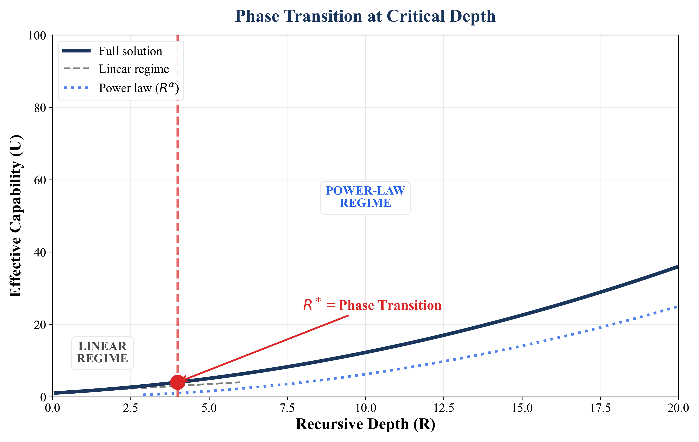
| Term | Plain English meaning |
|---|---|
| ARC | Artificial Recursive Creation: the principle that recursive self-correction on structured asymmetry may produce super-linear capability gains |
| Scaling law | A mathematical relationship showing how one quantity changes as another changes |
| Power law | A relationship where $Y = X^{\alpha}$ (like how area scales as length squared) |
| Exponential | A relationship where $Y = e^{\alpha X}$ (like compound interest) |
| Recursive | Self-referential; the output becomes the input for the next step |
| Recurrent | Repeating in cycles; in neuroscience, refers to neural signals that loop back |
| Sequential | One step after another, each building on the last |
| Parallel | Multiple independent attempts at once |
| Falsifiable | Can be proven wrong by experiment |
| $\alpha$ (alpha) | The scaling exponent; determines if returns compound or diminish |
| $\beta$ (beta) | Self-referential coupling; how much prior work helps the next step |
| $\Lambda$ (Lambda) | Google's quantum error suppression factor (exponential decay rate) |
| Quenched disorder | Structured asymmetry (like varied bead sizes) that enables the system to function |
| Scaling crossover | The point where scaling behaviour changes from one regime to another |